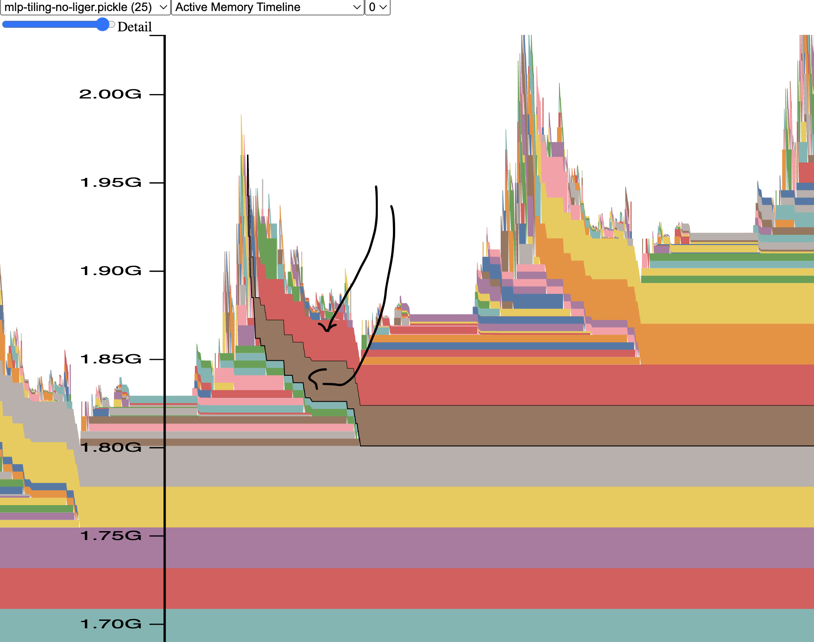

Debugging PyTorch Programs
Most of the time spent debugging ML code is not spent thinking. It is spent waiting: for a 30B-parameter model to load, for the job to reach the step that breaks, for a cluster allocation to come back. The first half of this chapter is about cutting that wait from minutes to seconds with tiny models, tiny tokenizers, tiny datasets and shortened layer stacks. The rest is a toolbox, organised by symptom:
| symptom | section |
|---|---|
CUDA out of memory with a useful traceback |
OOM in forward |
CUDA out of memory inside loss.backward() with a useless traceback |
OOM in backward |
| OOM although "reserved but unallocated" is large | Fragmentation |
| memory grows step after step | Memory profiler, see_memory_usage |
the process just prints Killed |
CPU OOM |
| GPU and CPU OOM alternate on Grace-based machines | Coherent memory |
| shape / device / dtype errors | Tensor attributes |
loss=nan or inf activations |
inf and nan, first layer that overflows |
| same code, different numbers on another device | Floating-point differences between devices |
| a CUDA traceback that points at the wrong line | Async CUDA errors |
| silent memory corruption in a custom kernel | compute-sanitizer |
| segfault, core file | faulthandler, core files |
| a single process hangs | faulthandler, strace, py-spy and line tracing |
| it worked with the old version of a library | git bisect |
Hangs and failures that involve several ranks or nodes (NCCL desyncs, flight recorder, multi-node py-spy, nodes that can't talk to each other, distributed profiling) are in the next chapter, Debugging distributed training.
Conventions:
- [ran] examples were executed while writing this chapter on a MacBook (Apple M4, CPU and the MPS GPU backend), Python 3.14.5,
torch==2.15.0,transformers==5.22.2, and the output shown is from that run. They needpip install torch transformers tokenizers rich lovely-tensors psutil. The scripts were written to a scratch directory; the code is given in full. - [untested] examples need an NVIDIA GPU, CUDA toolkit, Linux or
sudo, and were not run here. Their outputs are from the original author's runs on the hardware named in the text (B200, H200, DGX Station, A100).
Prerequisites
- Toolkit: git from zero, reading tracebacks from the bottom, reading C and regular expressions and
grep. - Linux and the OS: signals, file descriptors and ulimits, RSS vs VSZ, the OOM killer, cgroups, NUMA,
dmesg, and the beginner's debugging toolkit:py-spy,strace,lsofandgdb. This chapter assumes those basics and goes further. - Computer architecture: IEEE 754 floating point, range vs precision.
- Distributed systems: hangs vs crashes and
faulthandleras a hang-to-crash converter; per-rank printing. - Model architectures: encoder-decoder vs decoder-only, Mixture of Experts, tokenizers and vocab size.
- GPU execution model (warps, shared memory) and writing kernels: compiling with
nvcc, loading a kernel into PyTorch, testing kernels. - The GPU software stack for hardware-side errors (Xid, ECC), and NVLink-C2C.
- Training arithmetic: the caching allocator, reading a memory snapshot, the dtype progression and loss scaling.
- Profiling and optimization: CUDA memory snapshots, OOM triage, activation checkpointing and its CPU offloading.
- Training stability for why
inf/nanhappen during training, and reproducibility. - Sequence parallelism and ALST, which the war stories below refer to.
Fast iteration: tiny models, tokenizers and datasets
Why tiny
If you develop and debug with full-size models and tokenizers, most of your time goes into restarting the program and waiting for it to reach the point of interest. Each restart costs minutes. Over a day that adds up to hours, and it drains motivation as well as time.
The rule is simple:
Unless you are testing the quality of a model, use a tiny random model, and if possible a tiny tokenizer.
Large models also need large resources. Any debugger can handle a single process, but a model that doesn't fit on one GPU needs parallelism, which means several processes, and most debuggers either break or can't show you what you need across processes. The ideal development environment is one process with a model that fits on the cheapest consumer GPU, or on a CPU. In a pinch, the free tier of Google Colab is enough.
So the development mantra becomes:
- the larger the model, the better the final product generates;
- the smaller the model, the sooner you can start the final product's training.
(Recent research shows larger isn't always better, but the point stands.)
Once the code works, switch to a real model to check generation quality. Even then, start with the smallest model that produces a sensible result, and use the largest one only for the final validation.
Making a tiny model
The examples use Hugging Face transformers models because their configs are uniform, but the principle applies to any modelling library.
The recipe:
- Fetch the config object of a full-size model. This downloads only
config.json, never the weights, so it works even for a 176B model like BLOOM-176B, without a GPU. - Shrink the hidden size and the other dimensions that make up the bulk of the parameters.
- Create a model from the shrunken config. Its weights are randomly initialised, so don't expect any quality from its output.
- Save it.
Here is google/mt5-small turned into a tiny random model [ran]:
# tiny_mt5.py -- shrink google/mt5-small into a tiny random model (downloads only config.json)
import os
from transformers import MT5Config, MT5ForConditionalGeneration
config = MT5Config.from_pretrained("google/mt5-small")
print("original:", config.d_model, config.d_ff, config.num_layers, config.num_decoder_layers, config.vocab_size)
config.update(dict(d_model=64, d_ff=256, d_kv=8, num_layers=8, num_decoder_layers=8,
num_heads=4, relative_attention_num_buckets=32))
model = MT5ForConditionalGeneration(config)
print(f"num of params {model.num_parameters():,}")
model.save_pretrained("mt5-tiny-random")
model.half().save_pretrained("mt5-tiny-random-fp16")
for d in ("mt5-tiny-random", "mt5-tiny-random-fp16"):
size = sum(os.path.getsize(os.path.join(d, f)) for f in os.listdir(d))
print(f"{d}: {size/2**20:.1f} MiB")
original: 512 1024 8 8 250112
num of params 16,993,152
mt5-tiny-random: 64.8 MiB
mt5-tiny-random-fp16: 32.4 MiB
How to read it: the original has a 512-wide hidden state, a 1024-wide MLP, 8 encoder and 8 decoder layers, and a 250,112-token vocabulary. After shrinking, the whole model is 17.0M parameters, and the whole run took 3 seconds. Rules for choosing the new values:
- The minimal version is just
d_model=64, d_ff=256. You can go smaller (sayd_model=8) as long as the number of attention heads isn't larger than the hidden size andd_kv * num_headsstays sensible. - Dump the original config first (
print(config)) and pick which other dimensions to cut. Fewer layers make the model even smaller and quicker to step through. - Encoder-decoder models have two layer counts. Shrink both. In T5/mT5,
num_decoder_layersfalls back tonum_layersonly when it isn't set, and a config loaded from a real checkpoint already has it set, so trimmingnum_layersalone leaves the decoder at full depth. BART, Marian, Pegasus and Whisper name the pairencoder_layersanddecoder_layers; the rule is the same.
Saving in half precision (model.half() for fp16, or model.bfloat16() for bf16, depending on what you will run in) halves the file again, from 64.8 to 32.4 MiB here. Stopping at this point already makes your program start much faster.
The original author measured this model at 1.2GB, then 126MB after the same shrinking and 64MB in fp16. Our 64.8 MiB fp32 figure is half of that 126MB because in our transformers version the output head shares its weight with the input embedding (tie_word_embeddings came out True), so the 250,112 x 64 matrix is stored once. With an untied head you have two such matrices: 2 \times 16.0\text{M} + 1.0\text{M} = 33\text{M} parameters, times 4 bytes, about 126 MiB, which matches.
That 16.0M figure is the real lesson: the vocabulary now dominates. 250{,}112 \times 64 = 16.0\text{M} of the 17.0M parameters are the embedding. A 250k vocab is unusually large (30-50k is more typical), but even 30k rows is a lot for a "tiny" model. To go further you have to shrink the tokenizer, which is the next section.
Nested configs
Multi-modal models often have a config inside a config. IDEFICS has one main object and two nested ones:
config
config.perceiver_config
config.vision_config
config.update() only touches the top level. Nested objects have to be updated directly:
config.update(dict(
hidden_size=64,
intermediate_size=37,
num_hidden_layers=5,
num_attention_heads=4,
max_position_embeddings=64,
max_sequence_length=64,
))
# sub object needs to be updated directly
config.vision_config.update(dict(embed_dim=64))
idefics-make-tiny-model.py is a full working script (without vocab shrinking, since its point is the nested update).
Per-layer pattern lists: layer_types
A related trap: architectures that interleave block types spell the pattern out in a layer_types list with one entry per layer. Qwen/Qwen-AgentWorld-35B-A3B has 40 linear_attention/full_attention entries next to "num_hidden_layers": 40, both under text_config. The two must be trimmed together [ran]:
# layer_types.py -- trimming num_hidden_layers without trimming layer_types
import sys
from transformers import AutoConfig
c = AutoConfig.from_pretrained(sys.argv[1])
tc = getattr(c, "text_config", c)
print("num_hidden_layers:", tc.num_hidden_layers, "| first 8 layer_types:", tc.layer_types[:8])
tc.num_hidden_layers = 2 # in-memory only: nothing complains
print("after trim:", tc.num_hidden_layers, len(tc.layer_types))
c.save_pretrained("trimmed")
try:
AutoConfig.from_pretrained("trimmed")
except Exception as e:
print(type(e).__name__, str(e)[:300])
$ python layer_types.py Qwen/Qwen-AgentWorld-35B-A3B
num_hidden_layers: 40 | first 8 layer_types: ['linear_attention', 'linear_attention', 'linear_attention', 'full_attention', 'linear_attention', 'linear_attention', 'linear_attention', 'full_attention']
after trim: 2 40
StrictDataclassClassValidationError Class validation error for validator 'validate_layer_type':
ValueError: `num_hidden_layers` (2) must be equal to the number of `layer_types` (40)
How to read it: there are two failure modes. Save the shrunken config and load it back, and it refuses outright (the last two lines). Mutate the object in memory only, and nothing is raised (the after trim: 2 40 line): the model quietly builds your 2 layers from the first 2 entries of the untouched list. Since this model's first full_attention is at index 3, you get two linear-attention layers and none of the block type you meant to keep. Trim in lockstep:
config.text_config.update(dict(
num_hidden_layers=4,
layer_types=config.text_config.layer_types[:4],
))
If you edit config.json directly, you can instead delete the layer_types entry and let the config regenerate the pattern from full_attention_interval at the new depth. Either way, pick a depth that spans one full period of the pattern (4 rather than 2 for this model), or the variation you wanted to keep disappears.
Making a tiny tokenizer
How hard this is depends on the tokenizer. The recipes below come from tokenizer experts at Hugging Face, adapted by the original author. Most need a fast tokenizer: the Rust implementation from HF's tokenizers library, whose entire state (vocab, merge rules, special tokens) lives in a single tokenizer.json. They branch on the tokenizer model types from Tokenizers:
- BPE: a token-to-id vocab plus an ordered list of merge rules (
"a b"means "mergeaandbintoab"). - Unigram: a list of pieces with scores.
- WordPiece / WordLevel: a plain token-to-id vocab, used by BERT-style models.
You don't need to understand these internals until you need them. On a first read you can skip to A tiny model with a tiny tokenizer.
Truncating the vocab in tokenizer.json (Anthony Moi's version)
Anthony Moi's shrinker keeps the first N ids. Low ids are the most frequent tokens for BPE, so the result still covers every byte or character. For BPE it must also drop every merge rule that would produce, or consume, a token that no longer exists:
import json
from transformers import AutoTokenizer
from tokenizers import Tokenizer
vocab_keep_items = 5000
mname = "microsoft/deberta-base"
tokenizer = AutoTokenizer.from_pretrained(mname, use_fast=True)
assert tokenizer.is_fast, "This only works for fast tokenizers."
tokenizer_json = json.loads(tokenizer._tokenizer.to_str())
vocab = tokenizer_json["model"]["vocab"]
if tokenizer_json["model"]["type"] == "BPE":
new_vocab = { token: i for token, i in vocab.items() if i < vocab_keep_items }
merges = tokenizer_json["model"]["merges"]
new_merges = []
for i in range(len(merges)):
a, b = merges[i].split()
new_token = "".join((a, b))
if a in new_vocab and b in new_vocab and new_token in new_vocab:
new_merges.append(merges[i])
tokenizer_json["model"]["merges"] = new_merges
elif tokenizer_json["model"]["type"] == "Unigram":
new_vocab = vocab[:vocab_keep_items]
elif tokenizer_json["model"]["type"] == "WordPiece" or tokenizer_json["model"]["type"] == "WordLevel":
new_vocab = { token: i for token, i in vocab.items() if i < vocab_keep_items }
else:
raise ValueError(f"don't know how to handle {tokenizer_json['model']['type']}")
tokenizer_json["model"]["vocab"] = new_vocab
tokenizer._tokenizer = Tokenizer.from_str(json.dumps(tokenizer_json))
tokenizer.save_pretrained(".")
GPT-2 keeps its only special token, <|endoftext|>, at the very end of the vocab (id 50256), so the cut drops it and code that needs an EOS token breaks. The fix is to move it to the last kept id:
if "gpt2" in mname:
new_vocab = { token: i for token, i in vocab.items() if i < vocab_keep_items-1 }
new_vocab["<|endoftext|>"] = vocab_keep_items-1
else:
new_vocab = { token: i for token, i in vocab.items() if i < vocab_keep_items }
Retraining a small tokenizer (Lysandre Debut's version)
Lysandre Debut's shrinker trains a new tokenizer of the same type and settings with train_new_from_iterator:
from transformers import AutoTokenizer
mname = "microsoft/deberta-base" # or any checkpoint that has a fast tokenizer.
vocab_keep_items = 5000
tokenizer = AutoTokenizer.from_pretrained(mname)
assert tokenizer.is_fast, "This only works for fast tokenizers."
tokenizer.save_pretrained("big-tokenizer")
# Should be a generator of list of texts.
training_corpus = [
["This is the first sentence.", "This is the second one."],
["This sentence (contains #) over symbols and numbers 12 3.", "But not this one."],
]
new_tokenizer = tokenizer.train_new_from_iterator(training_corpus, vocab_size=vocab_keep_items)
new_tokenizer.save_pretrained("small-tokenizer")
It needs a training corpus. A cheap trick is to train the new tokenizer on the old one's vocabulary:
from transformers import AutoTokenizer
mname = "microsoft/deberta-base"
vocab_keep_items = 5000
tokenizer = AutoTokenizer.from_pretrained(mname)
assert tokenizer.is_fast, "This only works for fast tokenizers."
vocab = tokenizer.get_vocab()
training_corpus = [ vocab.keys() ] # Should be a generator of list of texts.
new_tokenizer = tokenizer.train_new_from_iterator(training_corpus, vocab_size=vocab_keep_items)
new_tokenizer.save_pretrained("small-tokenizer")
That is almost perfect, except the new tokenizer has no information about how frequent each token was, which is what most tokenizer training algorithms use to pick the vocab. If you need that, make each key appear len(vocab) - id times, so lower ids (more frequent tokens) repeat more:
training_corpus = [ (k for i in range(vocab_len-v)) for k,v in vocab.items() ]
where vocab_len is len(vocab) and v is the token's id. This makes training much slower. For a test model, frequency doesn't matter.
Here is the vocab trick on GPT-2 [ran] (2 seconds):
# tiny_tok_retrain.py -- train a new 5000-token tokenizer of the same type, using the old vocab as corpus
from transformers import AutoTokenizer
tokenizer = AutoTokenizer.from_pretrained("gpt2")
vocab = tokenizer.get_vocab()
new_tokenizer = tokenizer.train_new_from_iterator([list(vocab.keys())], vocab_size=5000)
new_tokenizer.save_pretrained("gpt2-retrained-tok")
print(len(new_tokenizer), new_tokenizer.tokenize("Debugging with tiny models is fast."))
5000 ['D', 'eb', 'ugg', 'ing', 'Ġ', 'with', 'Ġ', 't', 'iny', 'Ġ', 'mod', 'els', 'Ġ', 'is', 'Ġ', 'f', 'ast', '.']
How to read it: Ġ is GPT-2's marker for a leading space. Because every vocab entry appeared exactly once, the trainer never learned that "space + word" is common, so every space is its own token. Compare with the truncation method's output in the next section, where Ġwith survives as one token. Both are fine for functional tests.
Hacking the tokenizer file directly
Some tokenizers can be truncated as plain text. Here is Llama-2's tokenizer cut to 3k items:
# Shrink the orig vocab to keep things small (just enough to tokenize any word, so letters+symbols)
# ElectraTokenizerFast is fully defined by a tokenizer.json, which contains the vocab and the ids,
# so we just need to truncate it wisely
import subprocess
import shlex
from transformers import LlamaTokenizerFast
mname = "meta-llama/Llama-2-7b-hf"
vocab_keep_items = 3000
tokenizer_fast = LlamaTokenizerFast.from_pretrained(mname)
tmp_dir = f"/tmp/{mname}"
tokenizer_fast.save_pretrained(tmp_dir)
# resize tokenizer.json (vocab.txt will be automatically resized on save_pretrained)
# perl -0777 -pi -e 's|(2999).*|$1},"merges": []}}|msg' tokenizer.json # 0-indexed, so vocab_keep_items-1!
closing_pat = '},"merges": []}}'
cmd = (f"perl -0777 -pi -e 's|({vocab_keep_items-1}).*|$1{closing_pat}|msg' {tmp_dir}/tokenizer.json")
#print(f"Running:\n{cmd}")
result = subprocess.run(shlex.split(cmd), capture_output=True, text=True)
# reload with modified tokenizer
tokenizer_fast_tiny = LlamaTokenizerFast.from_pretrained(tmp_dir)
tokenizer_fast_tiny.save_pretrained(".")
The perl one-liner: -0777 reads the whole file as a single string, -p prints the (edited) input back out, and -i writes it into the same file, i.e. edits in place. The substitution s|...|...|msg (the s flag lets .* run across newlines) keeps everything up to 2999, the last id to keep, and replaces the rest with },"merges": []}}, so the vocab ends there and the merges list becomes empty. The result is only good for functional testing. The full version, which shrinks both model and tokenizer, is make_tiny_model.py. (Llama-2 is a gated repo: you need to accept its licence on the Hub and log in.) [untested]
Shrinking a SentencePiece vocab
Tokenizers backed by a SentencePiece .model file (a serialised protobuf) need a different approach: parse the protobuf, pop pieces off the end, write it back. First clone SentencePiece into the parent directory, because the protobuf module sentencepiece_model_pb2 isn't installed with the package:
git clone https://github.com/google/sentencepiece
import os
import sys
# workaround for fast tokenizer protobuf issue, and it's much faster too!
os.environ["PROTOCOL_BUFFERS_PYTHON_IMPLEMENTATION"] = "python"
from transformers import XLMRobertaTokenizerFast
mname = "xlm-roberta-base"
# Shrink the orig vocab to keep things small
vocab_keep_items = 5000
tmp_dir = f"/tmp/{mname}"
vocab_orig_path = f"{tmp_dir}/sentencepiece.bpe.model" # this name can be different
vocab_short_path = f"{tmp_dir}/spiece-short.model"
# HACK: need the sentencepiece source to get sentencepiece_model_pb2, as it doesn't get installed
sys.path.append("../sentencepiece/python/src/sentencepiece")
import sentencepiece_model_pb2 as model
tokenizer_orig = XLMRobertaTokenizerFast.from_pretrained(mname)
tokenizer_orig.save_pretrained(tmp_dir)
with open(vocab_orig_path, 'rb') as f: data = f.read()
# adapted from https://blog.ceshine.net/post/trim-down-sentencepiece-vocabulary/
m = model.ModelProto()
m.ParseFromString(data)
print(f"Shrinking vocab from original {len(m.pieces)} dict items")
for i in range(len(m.pieces) - vocab_keep_items): _ = m.pieces.pop()
print(f"new dict {len(m.pieces)}")
with open(vocab_short_path, 'wb') as f: f.write(m.SerializeToString())
m = None
tokenizer_fast_tiny = XLMRobertaTokenizerFast(vocab_file=vocab_short_path)
tokenizer_fast_tiny.save_pretrained(".")
[untested] The approach is adapted from Trim Down SentencePiece Vocabulary.
A tiny model with a tiny tokenizer
The vocab can be as small as the tokenizer allows: enough tokens to cover the target alphabet and special characters. 3-5k tokens is usually more than enough, and sometimes far fewer works (ASCII has 128 characters).
Here is the whole pipeline on GPT-2: truncate its BPE tokenizer to 5000 tokens, keep <|endoftext|>, build a 2-layer random model with the matching vocab size, and generate a few tokens to prove model and tokenizer work together [ran]:
# tiny_tok.py -- shrink a fast BPE tokenizer to 5000 tokens, then build a tiny random model that uses it
import json
from transformers import AutoTokenizer, GPT2Config, GPT2LMHeadModel
from tokenizers import Tokenizer
mname, vocab_keep_items = "gpt2", 5000
tokenizer = AutoTokenizer.from_pretrained(mname)
assert tokenizer.is_fast, "This only works for fast tokenizers."
tj = json.loads(tokenizer._tokenizer.to_str())
vocab = tj["model"]["vocab"]
print("model type:", tj["model"]["type"], "| original vocab:", len(vocab), "| merges:", len(tj["model"]["merges"]))
# gpt2 keeps <|endoftext|> at the very end (id 50256): keep it by moving it to the last kept id
new_vocab = {tok: i for tok, i in vocab.items() if i < vocab_keep_items - 1}
new_vocab["<|endoftext|>"] = vocab_keep_items - 1
merges = tj["model"]["merges"]
merges = [m if isinstance(m, str) else " ".join(m) for m in merges] # newer tokenizers store pairs as lists
new_merges = [m for m in merges if all(x in new_vocab for x in (*m.split(), "".join(m.split())))]
tj["model"]["vocab"], tj["model"]["merges"] = new_vocab, new_merges
tokenizer._tokenizer = Tokenizer.from_str(json.dumps(tj))
tokenizer.save_pretrained("gpt2-tiny-tok")
print("new vocab:", len(tokenizer), "| merges kept:", len(new_merges))
print(tokenizer.tokenize("Debugging with tiny models is fast."))
config = GPT2Config.from_pretrained(mname)
config.update(dict(vocab_size=len(tokenizer), n_embd=64, n_layer=2, n_head=4, n_positions=128))
model = GPT2LMHeadModel(config)
print(f"num of params {model.num_parameters():,}")
ids = tokenizer("Debugging with tiny models is fast.", return_tensors="pt").input_ids
out = model.generate(ids, max_new_tokens=5, do_sample=False, pad_token_id=tokenizer.eos_token_id)
print(repr(tokenizer.decode(out[0])))
model type: BPE | original vocab: 50257 | merges: 50000
new vocab: 5000 | merges kept: 4743
['D', 'eb', 'ug', 'ging', 'Ġwith', 'Ġt', 'iny', 'Ġmodels', 'Ġis', 'Ġfast', '.']
num of params 428,288
'Debugging with tiny models is fast......'
How to read it: 256 byte-level base tokens + 4,743 surviving merges + 1 special token = 5,000. The model is 428k parameters (GPT-2 small is 124M), and the generated text is garbage (.....) as expected from random weights. What matters is that encoding, the forward pass and decoding all work. Note the newer tokenizers stores merges as ["a", "b"] pairs rather than "a b" strings, which the one-line normalisation handles; the original Anthony Moi snippet assumed strings.
The original author's complete scripts for this, which also validate that model and tokenizer work together:
- mt5-make-tiny-model.py: the MT5 example above plus SentencePiece shrinking. The final model file is 3.34MB, down from 1.2GB.
- fsmt-make-super-tiny-model.py: builds a totally new tiny vocab from scratch.
Practical advice:
- Store the building script next to the model (in the same Hub repo), so that you can fix it or make a variant quickly.
- Look before you build.
transformersneeds tiny models for its own test suite, so there is very likely one already for your architecture under hf-internal-testing. They don't include the scripts that made them, but you now know how. - Adapt an existing tiny model. It's random, so only the dimensions matter. If the tiny model you found has 2 layers and you need 8, load it, change the config, and re-save.
Making a tiny dataset
A tiny dataset helps for the same reason: it won't tell you anything about quality, but the program starts and finishes an epoch quickly.
The gain is smaller than for models if you use pre-indexed Arrow datasets. HF datasets stores each prepared dataset as Apache Arrow files, a columnar on-disk format that is memory-mapped rather than loaded, so even a huge dataset opens instantly. But if you want an epoch to end after 10 steps, using a tiny dataset is simpler than editing your code to truncate the real one.
How to make one depends on how the original dataset was built, but the concept is:
- Clone the full dataset's git repo.
- Replace its data tarball with a tiny one containing a few samples.
- Publish the result as data files the Hub can load without a custom script (Parquet, Arrow, JSON/JSONL, CSV, or an image/text folder), plus a dataset card.
Loading scripts no longer run. As of datasets 4.0, load_dataset no longer executes Python loading scripts hosted on the Hub. Keep any builder or unpacker .py in the repo as documentation of how the tiny set was made and for local regeneration, but what remote users load must be the data files. See Dataset repository structure.
Examples where the original tarball was cut to its first 10k records and the builder script stayed mostly the same:
Synthetic examples, where the original was unpacked, a few representative samples were hand-picked, and a script builds a dataset of any desired size from them:
- stas/general-pmd-synthetic-testing and its unpacker
- stas/cm4-synthetic-testing and its unpacker
These are multi-modal: each sample can have several text entries and images. The unpacker expands each multi-record sample into its own sub-directory, so you can tweak it by hand: add or remove images, shorten texts. Images are shrunk to at most 32x32, applying "tiny" to every dimension that doesn't break the code under test. The main script then uses that directory structure to build a dataset of any length.
Deploying stas/general-pmd-synthetic-testing [untested here]:
# prep dataset repo
https://huggingface.co/new-dataset => stas/general-pmd-synthetic-testing
git clone https://huggingface.co/datasets/stas/general-pmd-synthetic-testing
cd general-pmd-synthetic-testing
# select a few seed records so there is some longer and shorter text, records with images and without,
# a few variations of each type
rm -rf data
python general-pmd-ds-unpack.py --dataset_name_or_path \
general_pmd/image/localized_narratives__ADE20k/train/00000-00002 --ids 1-10 --target_path data
cd data
# shrink to 32x32 max, keeping ratio
mogrify -format jpg -resize 32x32\> */*jpg
# adjust one record to have no image and no text
cd 1
rm image.jpg text.txt
touch image.null text.null
cd -
cd ..
# create tarball
tar -cvzf data.tar.gz data
# complete the dataset repo
echo "This dataset is designed to be used in testing. It's derived from general-pmd/localized_narratives__ADE20k \
dataset" >> README.md
# test dataset - it must load from plain data files, with no remote loading script
cd ..
python -c 'from datasets import load_dataset; print(load_dataset("general-pmd-synthetic-testing"))'
The first line is a manual step: create the empty dataset repo on the website. mogrify is ImageMagick's in-place image converter, and -resize 32x32\> shrinks only images larger than 32x32, keeping the aspect ratio. The .null files are this dataset's convention for a missing image or text, so the test set covers the "no image" and "no text" code paths.
Again, store the building scripts with the dataset, and look under hf-internal-testing first.
Local copies of the scripts
In case the Hub is down or the scripts linked above disappear, copies are kept in this repository under debug/tiny-scripts/:
- c4-en-10k.py, oscar-en-10k.py, openwebtext-10k.py: 10k-record text datasets.
- general-pmd-synthetic-testing.py with general-pmd-ds-unpack.py, and cm4-synthetic-testing.py with m4-ds-unpack.py: synthetic multi-modal datasets and their unpackers.
- mt5-make-tiny-model.py, fsmt-make-super-tiny-model.py, idefics-make-tiny-model.py: tiny models.
To refresh that backup from the links in a markdown file, the original author used this one-liner, which turns every https://...py) link into a wget of its raw version (blob replaced with raw):
perl -lne 'while (/(https.*?.py)\)/g) { $x=$1; $x=~s/blob/raw/; print qq[wget $x] }' make-tiny-models.md
Beyond ML
The dataset, the model and the tokenizer can each be made tiny. If you come from another field, the same idea applies to whatever your artifacts and payloads are: make every input as small as it can be without breaking the code path you are debugging.
Shrinking a real model's layer stack
Tiny random models are the first choice (the "small payload" principle in The Art of Debugging). But some problems only appear with the real model: real weight shapes, real memory sizes, a real checkpoint format. Then you have to load the full-size model, which can take minutes before you even reach the point of interest.
Transformers repeat one block many times. If a model has 48 layers, you can keep just 2. Loading and running get dramatically faster. The output is garbage, but we aren't looking at quality when the job hangs or crashes.
Keep at least one of each block type. If the layers aren't identical, for example MoE models that alternate between dense and expert blocks, or hybrids that interleave linear and full attention, keep at least one full period of the pattern. The demonstrations use the MoE model Qwen/Qwen3-30B-A3B-Instruct-2507 with 48 hidden layers (see its config file); we keep 2 layers in case it alternates two block types. Qwen/Qwen3-Next-80B-A3B-Instruct has a full-attention block only once every 4 layers, so it would need at least 4.
The entry to change is num_hidden_layers. Some architectures pair it with a companion entry that must be trimmed in lockstep, a decoder-side layer count or a layer_types list, as shown in Making a tiny model.
How much it saves
First the arithmetic [ran], using the meta device, which creates tensors with shapes and dtypes but no storage, so a 30B model costs no RAM:
# shrink_layers.py -- how much of Qwen3-30B-A3B survives num_hidden_layers=2 (counted on the meta device, no RAM used)
import torch
from transformers import AutoConfig, AutoModelForCausalLM
c = AutoConfig.from_pretrained("Qwen/Qwen3-30B-A3B-Instruct-2507")
for n in (c.num_hidden_layers, 2):
c.num_hidden_layers = n
with torch.device("meta"):
m = AutoModelForCausalLM.from_config(c)
total = sum(p.numel() for p in m.parameters())
print(f"layers={n:2d} params={total/1e9:6.2f}B bf16 weights={total*2/2**30:6.1f} GiB")
layers=48 params= 30.53B bf16 weights= 56.9 GiB
layers= 2 params= 1.87B bf16 weights= 3.5 GiB
How to read it: 2 layers keep 6% of the parameters. They aren't 2/48 = 4\% because the embedding and LM head (vocab x hidden, each) stay whole: they are about 0.6B of the remaining 1.87B. Of the 56.9 GiB of weights, 3.5 GiB remain.
Then the wall clock, as measured by the original author [untested here]:
git clone https://huggingface.co/Qwen/Qwen3-30B-A3B-Instruct-2507
time python -c 'import sys; from transformers import AutoModelForCausalLM; \
AutoModelForCausalLM.from_pretrained(sys.argv[1])' ./Qwen3-30B-A3B-Instruct-2507
perl -pi -e 's|"num_hidden_layers": 48|"num_hidden_layers": 2|' Qwen3-30B-A3B-Instruct-2507/config.json
time python -c 'import sys; from transformers import AutoModelForCausalLM; \
AutoModelForCausalLM.from_pretrained(sys.argv[1])' ./Qwen3-30B-A3B-Instruct-2507
Full model:
real 5m59.857s
user 128m28.088s
sys 16m33.861s
2 layers:
real 0m20.398s
user 2m9.101s
sys 2m29.587s
How to read time's output: real is the wall-clock time, i.e. the waiting you actually do. user and sys are CPU time spent in your code and in the kernel, summed over all cores, which is why they can be much larger than real on a many-core machine. Only real matters here: 6 minutes vs 20 seconds, 18x faster, about 5.5 minutes saved on every restart. And that is before running a single step.
There are three ways to do it. They assume HF Transformers, but the method carries over to other frameworks.
Method 1: local clone with config edits
Clone the model's git repo from the Hub, edit num_hidden_layers in config.json, and load from the local path (as in the timing above):
git clone https://huggingface.co/Qwen/Qwen3-30B-A3B-Instruct-2507
perl -pi -e 's|"num_hidden_layers": 48|"num_hidden_layers": 2|' Qwen3-30B-A3B-Instruct-2507/config.json
python -c 'import sys; from transformers import AutoModelForCausalLM; \
AutoModelForCausalLM.from_pretrained(sys.argv[1])' ./Qwen3-30B-A3B-Instruct-2507
Make sure the code loads the local clone, not the Hub name:
- ... from_pretrained("Qwen/Qwen3-30B-A3B-Instruct-2507")
+ ... from_pretrained("./Qwen3-30B-A3B-Instruct-2507")
Its advantage: the user-facing code doesn't change at all.
Method 2: editing the config object on the fly
Even simpler: no clone, but you have to modify the calling code:
python -c 'import sys; from transformers import AutoModelForCausalLM, AutoConfig; \
c=AutoConfig.from_pretrained(sys.argv[1]); c.num_hidden_layers=2; \
m=AutoModelForCausalLM.from_pretrained(sys.argv[1], config=c)' Qwen/Qwen3-30B-A3B-Instruct-2507
Since the truncated model produces garbage anyway, you can skip loading the weights altogether and build it from the config:
python -c 'import sys; from transformers import AutoModelForCausalLM, AutoConfig; \
c=AutoConfig.from_pretrained(sys.argv[1]); c.num_hidden_layers=2; \
m=AutoModelForCausalLM.from_config(c)' Qwen/Qwen3-30B-A3B-Instruct-2507
Method 3: hacking the modeling code
Useful when you work with several models of the same architecture and don't want to touch user code. Clone Transformers and install it in editable mode:
git clone https://github.com/huggingface/transformers
cd transformers
pip install -e .[dev]
-e makes an editable install: Python imports the package straight from the clone instead of a copy in site-packages, so edits under src/transformers take effect immediately. [dev] also installs the optional development dependencies (quote it as ".[dev]" in zsh, which otherwise treats the brackets as a glob).
Find the modeling code. The architectures field in the model's config says Qwen3MoeForCausalLM:
$ grep -Ir "class Qwen3MoeForCausalLM" src/transformers/models
src/transformers/models/qwen3_moe/modeling_qwen3_moe.py:class Qwen3MoeForCausalLM(Qwen3MoePreTrainedModel, GenerationMixin):
src/transformers/models/qwen3_moe/modular_qwen3_moe.py:class Qwen3MoeForCausalLM(MixtralForCausalLM):
modeling_qwen3_moe.py is the file that gets imported. (modular_*.py files are the source from which Transformers generates the modeling_*.py files; editing them has no effect at run time.) Search it for num_hidden_layers to find where the layers are built:
class Qwen3MoeModel(Qwen3MoePreTrainedModel):
def __init__(self, config: Qwen3MoeConfig):
super().__init__(config)
[...]
self.layers = nn.ModuleList(
[Qwen3MoeDecoderLayer(config, layer_idx) for layer_idx in range(config.num_hidden_layers)]
)
and override the value:
class Qwen3MoeModel(Qwen3MoePreTrainedModel):
def __init__(self, config: Qwen3MoeConfig):
super().__init__(config)
[...]
config.num_hidden_layers = 2
self.layers = nn.ModuleList(
[Qwen3MoeDecoderLayer(config, layer_idx) for layer_idx in range(config.num_hidden_layers)]
)
Now every Qwen3MoeForCausalLM model loaded in this environment uses only its first 2 layers.
If you need the full model loaded but only a few layers run, change the loop over layers in Qwen3MoeModel.forward instead. From:
for decoder_layer in self.layers[: self.config.num_hidden_layers]:
hidden_states = decoder_layer(...)
to:
KEEP_N_LAYERS = 2
for idx, decoder_layer in enumerate(self.layers[: self.config.num_hidden_layers]):
# note: shortcut for much faster completion
if idx+1 > KEEP_N_LAYERS: continue
hidden_states = decoder_layer(...)
What a shrunk model is good for
- Loading a pre-trained checkpoint into a shortened stack prints a flurry of warnings about ignored weights. That is expected.
- The model is fine for functional checks, memory and speed tuning. It produces garbage, and its loss will be very high, but it should not be
NaN. ANaNis a real bug. - Extrapolate per-layer costs. Measure time and memory with 2 layers and with 4: the difference divided by 2 is one layer's cost, and you can extrapolate to the full depth.
- Memory per layer. Unless there is a leak, once the first layer has run, later layers shouldn't add memory beyond the transient peak, as long as activation checkpointing is off and the CUDA cache isn't flushed. With activation checkpointing on, expect each layer to add the same amount as the previous one (the size of the checkpointed tensor).
Skipping work inside a layer
The same trick works for any stack of code-identical blocks. You can reduce the number of attention heads, so attention runs much faster (producing garbage, which is fine for functional debugging), or skip most attention blocks entirely.
While debugging 15M-token sequence-length training with ALST (Arctic Long Sequence Training, see long-sequence variants), the original author ran self-attention only in the last layer and skipped it in all the others. Full self-attention is O(n^2) in sequence length, so at 15M tokens this cut testing time from hours to minutes.
To run attention only in the last layer, using Qwen3MoeAttention, add two flags in __init__:
def __init__(self, config: Qwen3MoeConfig, layer_idx: int):
super().__init__()
self.skip_all_but_last_attention_debug_mode = True
self.rotating_layer_counter = 0
Then, in Qwen3MoeAttention.forward, replace
attn_output, attn_weights = attention_interface(self, query_states, ...)
(the ... stands for the trimmed arguments) with the code below. attention_interface is the attention function Transformers picks at run time (eager, SDPA, FlashAttention, etc.). einops.rearrange (from the einops library, pip install einops) reorders dimensions according to a pattern of named axes; here it turns the query, shaped (batch, heads, seqlen, head_dim), into the (batch, seqlen, heads, head_dim) layout the real attention output has:
import einops
if not self.skip_all_but_last_attention_debug_mode:
attn_output, attn_weights = attention_interface(self, query_states, ...)
else:
self.rotating_layer_counter = (self.rotating_layer_counter + 1) % self.num_hidden_layers
# we detect the last layer by module counting since we know how many layers there are
if self.rotating_layer_counter % self.num_hidden_layers == 0:
attn_output, attn_weights = attention_interface(self, query_states, ...)
else:
# this feeds bogus data of the right shape connected to a graph - good enough for debug
attn_output = einops.rearrange(query_states, "bs hc sl ... -> bs sl hc ...")
attn_weights = None
The bogus output is computed from query_states, so it stays connected to the autograd graph and backward still runs through every layer. (self.num_hidden_layers has to be set from config.num_hidden_layers in __init__; the snippet assumes it.) [untested]
Memory
GPU memory is usually the scarcest resource, more so than compute. Training arithmetic tells you what a configuration should use, and OOM triage maps the common OOM symptoms to causes. This section is about locating the problem in your code. The error everyone wants to avoid:
CUDA out of memory. Tried to allocate 15.41 GiB. GPU 3 has a total capacity of 79.10 GiB of which 15.40 GiB is free
Reading a CUDA OOM in forward
A toy model whose forward creates three intermediate tensors the size of the input [untested here; output from the original author on a B200, 180GiB of HBM]:
import torch
class MyModel(torch.nn.Module):
def forward(self, x):
y = x.div(2)
z = y.add(10)
l = z.mul(2.0)
return l.sum()
x = torch.rand(int(15e9), device="cuda", requires_grad=True) # 15B elements
net = MyModel()
loss = net(x) # implicit forward
loss.backward()
$ python mem-oom.py
Traceback (most recent call last):
File "/base/mem-oom.py", line 12, in <module>
loss = net(x)
^^^^^^
File "/home/stas/miniconda3/envs/dev/lib/python3.12/site-packages/torch/nn/modules/module.py", line 1775, in _wrapped_call_impl
return self._call_impl(*args, **kwargs)
^^^^^^^^^^^^^^^^^^^^^^^^^^^^^^^^
File "/home/stas/miniconda3/envs/dev/lib/python3.12/site-packages/torch/nn/modules/module.py", line 1786, in _call_impl
return forward_call(*args, **kwargs)
^^^^^^^^^^^^^^^^^^^^^^^^^^^^^
File "/base/mem-oom.py", line 6, in forward
l = z.mul(2.0)
^^^^^^^^^^
torch.OutOfMemoryError: CUDA out of memory. Tried to allocate 55.88 GiB. GPU 0 has a total capacity of 178.35 GiB of which 10.00 GiB is free. Including non-PyTorch memory, this process has 168.34 GiB memory in use. Of the allocated memory 167.64 GiB is allocated by PyTorch, and 4.62 MiB is reserved by PyTorch but unallocated. ...
How to read it: 15e9 fp32 elements are 55.88 GiB each. x, y and z are three of them (167.64 GiB allocated), and the fourth (l) doesn't fit in the remaining 10 GiB. The traceback, read from the bottom, names the line:
File "/base/mem-oom.py", line 6, in forward
l = z.mul(2.0)
From there you act: shorter sequences, smaller batch, smaller model, or more memory-efficient code. "4.62 MiB reserved but unallocated" says fragmentation is not the problem here. (On a GPU with a different capacity, scale x up or down to reproduce.)
CUDA OOM in backward: anomaly mode
Unless you write your own torch.autograd.Function, PyTorch generates backward for every op you run in forward. When something fails in that generated code, the traceback ends in the autograd engine and says nothing about which forward line created the failing node.
An OOM in backward is hard to provoke in a toy script, because PyTorch frees the forward's temporaries as soon as backward consumes them. So we leak them on purpose: returning the intermediates from forward keeps their reference counts above zero. With x shrunk to 10B elements, forward fits but backward doesn't [untested here; B200 output from the original author]:
import torch
class MyModel(torch.nn.Module):
def forward(self, x):
y = x.div(2)
z = y.add(10)
l = z.mul(2.0)
return l.sum(), y, z, l
x = torch.rand(int(10e9), device="cuda", requires_grad=True) # 10B elements
net = MyModel().cuda()
loss, y, z, l = net(x)
loss.backward()
$ python mem-oom.py
Traceback (most recent call last):
File "/base/mem-oom.py", line 13, in <module>
loss.backward()
File "/home/stas/miniconda3/envs/dev/lib/python3.12/site-packages/torch/_tensor.py", line 625, in backward
torch.autograd.backward(
File "/home/stas/miniconda3/envs/dev/lib/python3.12/site-packages/torch/autograd/__init__.py", line 354, in backward
_engine_run_backward(
File "/home/stas/miniconda3/envs/dev/lib/python3.12/site-packages/torch/autograd/graph.py", line 841, in _engine_run_backward
return Variable._execution_engine.run_backward( # Calls into the C++ engine to run the backward pass
^^^^^^^^^^^^^^^^^^^^^^^^^^^^^^^^^^^^^^^^^^^^^^^^^^^^^^^^^^^^^^^^^^^^^^^^^^^^^^^^^^^^^^^^^^^^^^
torch.OutOfMemoryError: CUDA out of memory. Tried to allocate 37.25 GiB. GPU 0 has a total capacity of 178.35 GiB of which 28.63 GiB is free. Including non-PyTorch memory, this process has 149.71 GiB memory in use. Of the allocated memory 149.01 GiB is allocated by PyTorch, and 6.11 MiB is reserved by PyTorch but unallocated. ...
Nothing in this traceback points at the model. In a real model with dozens of classes and layers, the only alternative would be bisecting the forward calls by hand.
PyTorch's anomaly detection mode records, for every autograd node, the Python stack of the forward call that created it, and adds it to any error raised in backward. Wrap both forward and backward in it:
with torch.autograd.detect_anomaly():
loss, y, z, l = net(x)
loss.backward()
The same OOM now reports:
$ python mem-oom.py
/base/mem-oom.py:12: UserWarning: Anomaly Detection has been enabled. This mode will increase the runtime and should only be enabled for debugging.
with torch.autograd.detect_anomaly():
/home/stas/miniconda3/envs/dev/lib/python3.12/site-packages/torch/autograd/graph.py:841: UserWarning: Error detected in MulBackward0. Traceback of forward call that caused the error:
File "/base/mem-oom.py", line 13, in <module>
loss, y, z, l = net(x)
File "/home/stas/miniconda3/envs/dev/lib/python3.12/site-packages/torch/nn/modules/module.py", line 1775, in _wrapped_call_impl
return self._call_impl(*args, **kwargs)
File "/home/stas/miniconda3/envs/dev/lib/python3.12/site-packages/torch/nn/modules/module.py", line 1786, in _call_impl
return forward_call(*args, **kwargs)
File "/base/mem-oom.py", line 6, in forward
l = z.mul(2.0)
(Triggered internally at /pytorch/torch/csrc/autograd/python_anomaly_mode.cpp:122.)
return Variable._execution_engine.run_backward( # Calls into the C++ engine to run the backward pass
Traceback (most recent call last):
File "/base/mem-oom.py", line 14, in <module>
loss.backward()
[...]
torch.OutOfMemoryError: CUDA out of memory. Tried to allocate 37.25 GiB. [...]
How to read it: the UserWarning: Error detected in MulBackward0 names the backward node that failed, and the "Traceback of forward call that caused the error" below it ends at mem-oom.py, line 6, l = z.mul(2.0): the multiply whose backward needed the 37.25 GiB.
Anomaly mode is more often used for NaNs produced in backward, and that you can try on a CPU [ran]:
# anomaly.py -- a backward-time failure, first without and then with anomaly detection
import sys, torch
class MyModel(torch.nn.Module):
def forward(self, x):
y = x.sqrt() # d/dx sqrt(x) = 1/(2 sqrt(x)) = inf at x=0
z = y * 0.0 # 0 * inf = nan in backward
return z.sum()
x = torch.zeros(4, requires_grad=True)
net = MyModel()
if sys.argv[1:] == ["detect"]:
with torch.autograd.detect_anomaly():
net(x).backward()
else:
net(x).backward()
print("grad:", x.grad)
$ python anomaly.py
grad: tensor([nan, nan, nan, nan])
$ python anomaly.py detect
.../anomaly.py:13: UserWarning: Anomaly Detection has been enabled. This mode will increase the runtime and should only be enabled for debugging.
.../torch/autograd/graph.py:1113: UserWarning: Error detected in SqrtBackward0. Traceback of forward call that caused the error:
File ".../anomaly.py", line 14, in <module>
net(x).backward()
File ".../torch/nn/modules/module.py", line 1787, in _wrapped_call_impl
return self._call_impl(*args, **kwargs)
File ".../torch/nn/modules/module.py", line 1798, in _call_impl
return forward_call(*args, **kwargs)
File ".../anomaly.py", line 6, in forward
y = x.sqrt() # d/dx sqrt(x) = 1/(2 sqrt(x)) = inf at x=0
[...]
RuntimeError: Function 'SqrtBackward0' returned nan values in its 0th output.
How to read it: without anomaly mode the NaN gradient appears silently. With it, backward stops at the first node whose output contains NaN (SqrtBackward0: incoming gradient 0 times derivative \infty) and points at line 6, the sqrt in forward.
Usage notes:
- To enable it globally (say, before the training loop):
torch.autograd.set_detect_anomaly(True). torch.autograd.set_detect_anomaly(True, check_nan=False)keeps the forward tracebacks but skips theNaNcheck on every backward output, which is a bit faster. Use it when you only want the tracebacks, as for the OOM.- Turn it off before real use. It records a stack for every op and slows everything down.
Fragmentation and expandable segments
When an OOM message says a lot of memory is "reserved by PyTorch but unallocated", the caching allocator holds enough free memory in total, but in holes too small for the requested block. This is fragmentation.
War story: in developing Arctic Long Sequence Training, a lot of the work involved hard (.contiguous()) reshapes of tensors for sequence parallelism. The reshapes fragmented memory and HBM utilization was very poor. The fix was:
export PYTORCH_ALLOC_CONF=expandable_segments:True
It allowed much longer sequences before hitting OOM. With expandable segments, instead of carving fixed-size blocks that leave unusable holes, the allocator reserves one large range of virtual addresses and maps physical pages into it on demand, so a segment can grow in place.
In that project there was no noticeable slowdown, but benchmark your own workload with and without it. The variable was originally named PYTORCH_CUDA_ALLOC_CONF and was renamed in recent PyTorch versions; the old name still works.
How much can you allocate?
Two one-liners measure how much memory a process can actually get, by allocating 1 GiB at a time (1024 \times 2^{18} fp32 elements = 2^{30} bytes) and printing a counter after each success [untested here; H200 node with ~2TiB of CPU RAM and 144GiB GPUs, output from the original author]. Don't run these on a shared machine without thinking: the CPU one ends with your process being killed.
CPU:
$ python -c 'import torch; [(torch.ones((1024*2**18)), print(c)) for c in range(2000)]'
0
1
2
[...]
1996
1997
Killed
The program asked for up to 2000 GiB and was killed by the CPU OOM killer after about 1997 GiB.
This is how you discover a cgroup limit your admin set. For example, on a shared 8-GPU node with 2 TiB of RAM where you asked for 1 GPU, you are likely to get 1/8 of the node's resources, so your processes may be killed at about 250 GiB (2000/8) even though top shows all 2 TiB free.
GPU (.cuda() moves each tensor to the GPU):
$ python -c 'import torch; [(torch.ones((1024*2**18)).cuda().contiguous(), print(c)) for c in range(200)]'
0
1
2
3
[...]
137
138
Traceback (most recent call last):
File "<string>", line 1, in <module>
torch.OutOfMemoryError: CUDA out of memory. Tried to allocate 1024.00 MiB.
GPU 0 has a total capacity of 139.80 GiB of which 289.25 MiB is free. [...]]
139 GiB, which matches an H200's usable capacity. Why bother? Because:
- when several systems share a GPU (for example vLLM and VeRL colocated for RL), PyTorch's own memory counters can be completely wrong, and this tells you the truth;
- you can emulate a smaller GPU. If your hyperparameters must fit an H200 but you only have a larger B300, allocate the difference first and the B300 behaves like an H200 memory-wise.
Both one-liners are also the measuring tools for the next section.
Coherent CPU-GPU memory: Grace, DGX Station, DGX Spark
Recent NVIDIA systems such as DGX Station, DGX Spark, GH200 and GB300 pair a Grace CPU with the GPU over NVLink-C2C, giving one cache-coherent address space: either side can read and allocate the other's memory. The CPU side uses LPDDR5, low-power DRAM soldered next to the CPU. This makes memory accounting confusing and behaviour unstable.
On DGX Spark you can't even read GPU memory usage: nvidia-smi says Not Supported and pynvml.nvmlDeviceGetMemoryInfo() asserts. You never know whether a CPU program will take memory a GPU program needs, or the reverse, so the same GPU workload can work once and OOM the next time, depending on what else runs on the CPU.
On DGX Station, in the original author's experiments, with default settings Linux may borrow GPU HBM when it runs out of LPDDR5, but not the other way round: PyTorch doesn't allocate from CPU RAM (as of 2026-08). Measured on a DGX Station with 277 GiB of HBM and 496 GiB of LPDDR5 (about 770 GiB coherent total in top) [untested here].
CPU, with the GPU idle (asks for up to 900 GiB):
$ python -c 'import torch; [(torch.ones((1024*2**18)), print(c)) for c in range(900)]'
0
1
2
3
...
748
749
750
Killed
About 750 GiB before the CPU OOM, with ~20 GiB used by system programs. So with nothing else running, a CPU process can use the whole coherent pool: once LPDDR5 is full it continues in the GPU's HBM. And nvidia-smi/NVML will not show that usage.
GPU:
$ python -c 'import torch; [(torch.ones((1024*2**18)).cuda().contiguous(), print(c)) for c in range(500)]'
0
1
2
3
[...]
272
273
274
Traceback (most recent call last):
File "<string>", line 1, in <module>
torch.OutOfMemoryError: CUDA out of memory. Tried to allocate 1024.00 MiB.
GPU 0 has a total capacity of 276.50 GiB of which 797.44 MiB is free. [...]]
PyTorch stops hard at the size of HBM and doesn't reach into CPU RAM.
Case study: finding the longest sequence length for post-training Qwen3-32B on a DGX Station, the original author kept getting CPU OOMs and GPU OOMs alternately. Optimizer states were offloaded to CPU RAM, since weights and optimizer states didn't fit in a single GB300's HBM. But there wasn't enough CPU RAM either, so Linux reached into the GPU's memory. The amount of free CPU RAM depended on whatever daemons and user programs happened to be running, so the outcome of dozens of experiments was unpredictable.
The fix is to stop the CPU from taking GPU memory by switching from the default NUMA mode (GPU memory is handed to Linux as just another NUMA node that the kernel may allocate from) to CDMM mode (Coherent Driver-based Memory Management: the NVIDIA driver alone manages GPU memory), as explained in a paper linked from Understanding Memory Management on Hardware-Coherent Platforms [untested here]:
$ echo options nvidia NVreg_CoherentGPUMemoryMode=driver | sudo tee /etc/modprobe.d/nvidia-openrm.conf
Then reboot. Files in /etc/modprobe.d/ set the options a kernel module gets when it is loaded, so the change takes effect on the next driver load. Check it:
$ grep Coherent /proc/driver/nvidia/params
CoherentGPUMemoryMode: "driver"
If it doesn't say "driver", it didn't work. Now CPU memory is CPU memory, GPU memory is GPU memory, and the counters reflect reality. Rerunning the CPU one-liner:
$ python -c 'import torch; [(torch.ones((1024*2**18)), print(c)) for c in range(900)]'
0
1
...
475
Killed
How to read it: 496 GiB of LPDDR5 minus ~20 GiB for the system is ~476 GiB, so the CPU no longer reaches into the (idle) GPU's memory. Before the switch it got to ~750 GiB.
DGX Spark has 120 GiB of LPDDR5 shared between CPU and GPU, and no HBM. Ideally you could assign, say, 80 GiB to the GPU and 40 GiB to the CPU and plan workloads reliably. The original author has asked NVIDIA for this; it doesn't exist as of this writing.
The PyTorch memory profiler
The memory snapshot (introduced in profiling) records every allocation and free with its Python stack. It has two stages [untested here, needs a GPU].
Stage 1. Record and dump:
import torch
torch.cuda.memory._record_memory_history(max_entries=int(1e9))
# your tensor creation code goes here, e.g.:
t = torch.zeros(100,100, device="cuda")
torch.cuda.memory._dump_snapshot("/tmp/mem.pickle")
- For a large program, record as many events as possible; a large
max_entrieslikeint(1e9)is a good default. - Limit the recording to a few iterations, or the browser will crash rendering it. Always record at least 2, since the first is an outlier; 3 is a good number.
- On multiple GPUs, write one file per rank:
rank = torch.distributed.get_rank() # assuming torch.dist has already been initialized
torch.cuda.memory._dump_snapshot(f"/tmp/mem-{rank}.pickle")
or dump only one rank if all ranks are symmetrical. The original author once missed this and had several ranks writing to the same file. The result rendered without errors but was a meaningless mix.
Stage 2. Render: drop the pickle file on https://docs.pytorch.org/memory_viz (it runs locally in the browser). The most useful view is the "Active Memory Timeline" in the drop-down menu. Hugging Face made an improved renderer.
Here is a real leak, found while implementing a tricky TiledMLP torch.autograd.Function (an MLP that processes a very long sequence in tiles and recomputes each tile in backward, so full-length intermediate activations never exist at once):

How to read it: the x axis is time (allocation events), the y axis is memory in use, and each coloured band is one live tensor. Look at the brown and red bands marked with black arrows. Their left edge is where two large tensors were created during one layer's forward, and unlike the other bands they continue to the right edge: they are never freed. The next spike is the next layer's forward, with yellow and orange bands showing the same leak. Each layer leaks a few MB; with a tiny model that is small, but with a real model it is GBs and you run out of memory quickly.
Click a band and the viewer shows the stack that allocated it. The bottom of the stack is PyTorch's C++/CUDA code, which won't mean much; scroll up into the Python frames to find calls you recognise, such as torch.zeros(). In forward that is usually enough to find the leak. In backward it is much harder unless you wrote the autograd function. If you are stuck, reduce the code to a minimal script that reproduces the problem and ask where PyTorch developers hang out: the #questions channel of the PyTorch Slack, or https://discuss.pytorch.org/. The forum has the advantage that the answer helps the next person too.
The profiler is also good for comparing implementations. This visualisation was made for the ALST paper and shows one forward-backward iteration of Llama-8B. Left: normal setup. Right: with activation checkpoint offloading to CPU:

How to read it:
- Left: the first third of the plot is the layer-by-layer
forward, the remaining two thirds are the layer-by-layerbackward.backwardtakes about twice as long because it computes gradients with respect to both weights and inputs.forwardpiles up memory;backwardgradually releases it while making small allocations of its own. With more layers, the hill keeps climbing until OOM. - Right: the intermediate tensors live in CPU memory, so the memory plot is flat. You could add many more layers and use the same amount of GPU memory.
- The big spikes during
backwardin both are gradient reductions across GPUs.
So even without a suspected leak, running your code through the memory profiler is worth it: it often suggests how to reduce memory, and at least gives you a feel for what the code does with GPU memory.
Further reading: Understanding GPU Memory 1: Visualizing All Allocations over Time.
Strategic memory tracing with see_memory_usage
Profilers are great, but often you want to choose exactly when to sample CPU and GPU memory. see-mem-usage.py is a small utility developed in the DeepSpeed project and lightly modified by the original author. Notes:
pip install nvidia-ml-py(NVML, the library behindnvidia-smi). Without it theNVcolumn is 0. With it you see the total GPU memory use, not just what PyTorch's allocator knows about. NCCL buffers, for example, aren't allocated through it and can take GBs.- Deleting a Python variable doesn't necessarily free the tensor immediately: objects in reference cycles wait for Python's garbage collector, which runs on its own schedule. So the utility calls
gc.collect()before every sample. - It is slow (
gc.collect()plus NVML queries), so don't leave it active in production. Calls only run withforce=True; flip them toforce=Falseand you can leave the calls in the code. - It prints only on rank 0 by default; pass
ranks=[1,3]to see other ranks.
The demo at the bottom of the file allocates two GPU tensors, frees one, copies the other to CPU, frees it on GPU, and frees the CPU copy:
device = "cuda" if torch.cuda.is_available() else "cpu"
see_memory_usage("before alloc", force=True)
t1 = torch.zeros(100_000,10_000, device=device)
t2 = torch.zeros(100_000,10_000, device=device)
del t2
see_memory_usage("after alloc", force=True)
c1 = t1.cpu()
see_memory_usage("after copy to cpu", force=True)
del t1
see_memory_usage("after freeing on gpu", force=True)
del c1
see_memory_usage("after freeing on cpu", force=True)
Output [untested here; from the original author's GPU run]:
$ python see-mem-usage.py
[0] mp: before alloc
[0] mp: MA 0.00 GiB | Max_MA 0.00 GiB | CA 0.00 GiB | Max_CA 0.00 GiB | NV 0.71 GiB | CPU mem: proc 0.51 GiB / node 84.09 GiB (4.2%)
[0] mp: after alloc
[0] mp: MA 3.73 GiB | Max_MA 7.45 GiB | CA 7.45 GiB | Max_CA 7.45 GiB | NV 8.87 GiB | CPU mem: proc 0.70 GiB / node 84.26 GiB (4.2%)
[0] mp: after copy to cpu
[0] mp: MA 3.73 GiB | Max_MA 3.73 GiB | CA 7.45 GiB | Max_CA 7.45 GiB | NV 8.87 GiB | CPU mem: proc 4.42 GiB / node 88.02 GiB (4.4%)
[0] mp: after freeing on gpu
[0] mp: MA 0.00 GiB | Max_MA 3.73 GiB | CA 7.45 GiB | Max_CA 7.45 GiB | NV 8.87 GiB | CPU mem: proc 4.42 GiB / node 88.01 GiB (4.4%)
[0] mp: after freeing on cpu
[0] mp: MA 0.00 GiB | Max_MA 0.00 GiB | CA 7.45 GiB | Max_CA 7.45 GiB | NV 8.87 GiB | CPU mem: proc 0.70 GiB / node 85.41 GiB (4.3%)
The columns:
MA:torch.cuda.memory_allocated(), memory held by live tensors right now.Max_MA:torch.cuda.max_memory_allocated(), the peak. The utility resets it after each call, so it is the peak since the previous call.CA:torch.cuda.memory_reserved(), what the caching allocator holds from CUDA: live tensors plus freed blocks kept for reuse instead of being returned to the driver.Max_CA:torch.cuda.max_memory_reserved(), the peak ofCA, reset the same way.NV: total GPU memory in use asnvidia-smireports it, almost always more thanMA.CPU mem: two point-in-time readings frompsutil.procis this process's resident memory (RSS,psutil.Process().memory_info().rss), which is what you want when debugging your own program.nodeis host-wide RAM in use (total - available) with its percentage. On a shared nodenodeincludes everyone else, so watchprocfor your process and usenodeonly to see how close the box is to full. Both are snapshots, not peaks; for the CPU peak see Peak CPU memory.
Reading the run row by row:
before alloc:NVis already 0.71 GiB with no tensors allocated, and alltorch.cudacolumns are 0. That is the CUDA context and the kernels loaded when CUDA initialised (see preloaded CUDA kernels), whichtorch.cudadoesn't count.proc0.51 GiB is the Python process afterimport torch.after alloc: two 3.73 GiB tensors were allocated and one freed.MAis 3.73 butMax_MAis 7.45 GiB: the peak was twice the current use. Programs often OOM exactly at such peaks, for example when an intermediate tensor isn't freed soon enough. In rare cases a well-placedgc.collect()prevents an OOM.CA7.45: the freed tensor's block stays cached.NV8.87: the cache is included, but even then 8.87 - 7.45 = 1.42 GiB is not accounted for bytorch.cuda, compared with 0.71 GiB before. Most likelytorch.zerosloaded more CUDA kernels.torch.distributedwith NCCL is another large source of such "lost" memory. Watch this gap between thetorch.cudacolumns andNV; sometimes many GiBs hide there.after copy to cpu: GPU columns unchanged,Max_MA=MAsince nothing was allocated or freed on GPU in this interval.procjumped from 0.70 to 4.42 GiB, a delta of exactly the tensor's size (100{,}000 \times 10{,}000 \times 4 bytes = 3.73 GiB). That is the advantage of process RSS: the delta is clean.nodemoved too (84.26 to 88.02) but it drifts with everything else on the box.after freeing on gpu:MAis 0.Max_MAis 3.73 because that tensor was live during this interval.procstays at 4.42: the CPU copyc1still exists.after freeing on cpu:procreturns to 0.70 GiB, the post-import baseline.nodecomes down too, but not to its start value, because other processes moved meanwhile. The CUDA cache (CA) is still held.
The CA columns are rarely useful for debugging. You can uncomment torch.cuda.empty_cache() inside see_memory_usage so the cache doesn't get in the way of accounting (this slows things down noticeably). Adding at the end:
torch.cuda.empty_cache()
see_memory_usage("after empty cache", force=True)
gives:
[0] mp: after empty cache
[0] mp: MA 0.00 GiB | Max_MA 0.00 GiB | CA 0.00 GiB | Max_CA 7.45 GiB | NV 1.42 GiB | CPU mem: proc 0.70 GiB / node 85.41 GiB (4.3%)
CA is now 0. Max_CA still shows the peak since the last call and would be 0 on the next one. NV 1.42 GiB is memory outside torch.cuda's view, the same 8.87 - 7.45 gap seen in row 2, now visible because the cache no longer hides it. When hunting leaks inside PyTorch itself, enabling empty_cache() inside the utility gives you that number directly.
The typical use is to sprinkle calls at strategic places and narrow down block by block. To see whether each training iteration leaks, and where:
see_memory_usage("before fwd", force=True)
output = model(**inputs)
see_memory_usage("before bwd", force=True)
output.loss.backward()
see_memory_usage("before step", force=True)
optimizer.step()
see_memory_usage("after step", force=True)
This is how the original author found a memory leak in all_gather_object, and several other leaks in PyTorch, all since fixed. More often, of course, the leak is in your own code.
CPU memory
CPU OOM: the silent Killed
CPU OOM is tricky, especially on a shared node where each user gets a slice of the memory. Once a process's resident memory (RSS in top) hits the limit, it gets killed, and all you see is:
Killed
which is easy to miss. The killer is usually the cgroup OOM killer (cgroups v2 docs; overview in the OS chapter). It sends SIGKILL, which can't be caught, so the program can't report anything. The kernel does: dmesg has an entry naming the killed process, how much memory it held and which limit it hit, and the cgroup's memory.events counters record the kill without needing sudo. See dmesg in The Art of Debugging for details.
In some setups, such as some recent Kubernetes versions, you are also kicked out of the job allocation, which makes it even harder to debug: see Kubernetes Silent Pod Killer.
In ML you meet CPU OOM in massively parallel data preprocessing, when offloading GPU memory to CPU, and most often when building wheels for large packages like FlashAttention 2 without setting MAX_JOBS low. MAX_JOBS caps how many compiler processes a PyTorch C++/CUDA extension build runs in parallel, and each can take several GBs.
Peak CPU memory: /usr/bin/time
see_memory_usage is invasive (you edit the code), doesn't work for non-Python programs, and its CPU columns are snapshots, so unless a call lands exactly on the high-water mark it misses the peak. You want a tool that reports the peak of an unmodified program.
/usr/bin/time is the external GNU time program, not the shell built-in time, which only reports run times. On Linux, -v prints everything [untested here, Linux output from the original author]:
$ /usr/bin/time -v python -c "import torch"
Command being timed: "python -c import torch"
User time (seconds): 8.12
System time (seconds): 0.24
Percent of CPU this job got: 629%
Elapsed (wall clock) time (h:mm:ss or m:ss): 0:01.33
Average shared text size (kbytes): 0
Average unshared data size (kbytes): 0
Average stack size (kbytes): 0
Average total size (kbytes): 0
Maximum resident set size (kbytes): 640688
Average resident set size (kbytes): 0
Major (requiring I/O) page faults: 3
Minor (reclaiming a frame) page faults: 75005
Voluntary context switches: 489
Involuntary context switches: 19
Swaps: 0
File system inputs: 0
File system outputs: 8
Socket messages sent: 0
Socket messages received: 0
Signals delivered: 0
Page size (bytes): 4096
Exit status: 0
The first lines are the same user/system/elapsed times the shell's time gives. The line we want is:
Maximum resident set size (kbytes): 640688
the highest RSS the program reached. If your program peaks at 200 GiB and you move it to a machine where you get 132 GiB, it won't work (it will most likely be killed if cgroups are configured). For "will it run out of CPU memory", RSS is the metric to track; the others are rarely useful for this (RSS vs VSZ and PSS).
War story: fitting a huge model into a given number of GPUs, the original author had to offload some parameters to CPU memory, and then ran out of CPU memory as well. The approach: remove half the layers (as in Shrinking a real model's layer stack), measure the peak, and extrapolate to the full model. You can compute it from tensor sizes, but measuring is often quicker, because calculations tend to miss components. Or get more CPU memory.
An observation: each GPU generation brings much more memory per GPU, but cloud providers keep giving the same CPU memory per node as with older, smaller GPUs, which limits offloading and causes the problems above. A node should have at least as much CPU memory as its total GPU memory, ideally two or three times as much.
For just the peak, -f '%M' prints only that number, in KiB, which you can pipe on:
$ /usr/bin/time -f '%M' python -c "import torch"
640684
$ /usr/bin/time -f '%M' python -c "import torch" |& perl -ne 'chomp; printf "%0.2fGiB\n", $_/2**20'
0.61GiB
/usr/bin/time writes its report to stderr, so |& (pipe stderr together with stdout) is needed. The perl -ne one-liner runs on each input line: chomp strips the newline, and printf divides the KiB figure by 2^{20} to get GiB. Unix memory numbers are imprecise: run the same command again and you get a slightly different figure.
Does the measurement check out? Measure import torch alone, then with a 2^{14} \times 2^{14} fp32 tensor (4 bytes x 2^{28} = 1024 MiB), then with a 2^{14} \times 2^{15} one (2048 MiB). The original author's Linux results:
$ /usr/bin/time -f '%M' python -c "import torch"
640704
$ /usr/bin/time -f '%M' python -c "import torch; t=torch.zeros(2**14,2**14)"
1549504
$ /usr/bin/time -f '%M' python -c "import torch; t=torch.zeros(2**14,2**15)"
2588624
- Run 1:
import torchpeaks at ~625 MiB (640704 / 2^{10}). - Run 2 minus run 1: (1549504 - 640704) / 2^{10} = 887.5 MiB, short of the expected 1024 MiB.
- Run 3 minus run 1: 1902 MiB, short of 2048 MiB by about the same amount.
- Run 3 minus run 2: 1014 MiB, very close to the expected 1024 MiB.
What's going on: this is a peak. import torch allocates memory and frees some of it, and the later tensor allocation partly reuses the freed memory, so it raises the peak by less than its size. Peak memory always tells you the high-water mark, but comparing peaks of program variants is tricky when memory gets freed after being allocated.
The same on macOS [ran], where the flag is -l and the value is in bytes:
$ for s in "import torch" "import torch; t=torch.zeros(2**14,2**14)" "import torch; t=torch.zeros(2**14,2**15)"; do /usr/bin/time -l python -c "$s" 2>&1 | grep "maximum resident"; done
220168192 maximum resident set size
1284800512 maximum resident set size
2358837248 maximum resident set size
Here the deltas are 1015.3 MiB and 2039.6 MiB, within 1% of the expected sizes: macOS's import torch didn't leave a large freed region for the tensor to reuse. Same tool, same commands, different OS, different conclusion. Always recalibrate your tools before comparing numbers, and don't compare numbers from different machines, versions or days.
Launchers and child processes. Does it measure processes spawned by a launcher? Linux, from the original author:
$ /usr/bin/time -f '%M' sh -c 'python -c "import torch" & wait'
640744
$ /usr/bin/time -f '%M' python -c "import torch"
640836
The same with and without a child process. But the original author also saw a launcher that calls another launcher, which then runs the PyTorch processes, report much less memory, and suspects time follows only the immediate child. In our macOS run, a grandchild two levels down was still counted (2,359,197,696 bytes for sh -c "sh -c 'python ... 2**15 tensor'"). The reported maximum comes from the kernel's accounting of child processes that were waited for, so a grandchild whose parent never waited for it, or one that was detached, may be missed. To be sure, use the next tool.
cgmemtime
cgmemtime is a small C program that puts the command in its own cgroup (cgroups v2) and reports the peak memory of the process and all of its descendants, however many generations deep. Build it:
git clone https://github.com/gsauthof/cgmemtime
cd cgmemtime
make
and copy the binary into a directory on your PATH (echo $PATH lists them). Then [untested here, Linux output from the original author]:
$ cgmemtime python -c "import torch"
user: 0.856 s
sys: 0.101 s
wall: 0.989 s
child_RSS_high: 389572 KiB
group_mem_high: 209240 KiB
$ cgmemtime sh -c 'python -c "import torch" & wait'
user: 0.875 s
sys: 0.085 s
wall: 0.961 s
child_RSS_high: 389416 KiB
group_mem_high: 206520 KiB
How to read it: it reports the times and two peaks. child_RSS_high is the largest RSS of any single process in the tree, the same kind of number as /usr/bin/time's %M. group_mem_high is the peak memory charged to the whole cgroup, i.e. all descendants together. It can come out smaller, as here, because pages that were already resident before the run (shared libraries in the page cache) count in RSS but are not charged to the new cgroup.
Compared with /usr/bin/time on the same machine and day:
$ /usr/bin/time -f '%M' sh -c 'python -c "import torch" & wait'
389748
389,416 vs 389,748 KiB: almost identical. (These numbers differ from the 640 MB measured earlier with the same command because they were taken at a different time with different versions: recalibrate before comparing.)
Most Linux distributions use cgroups v2 as of 2026-08. On an older one with cgroups v1, use an older version of cgmemtime, which was originally written for v1. It is not known how to make it work inside a Kubernetes pod; probably the container isn't configured to allow creating cgroups.
Debugging tensors
During development, debugging, and writing tests, you constantly need to look at tensors: their data, their attributes, or both. This section collects the efficient ways.
Printing tensor values
Printing a tensor is often enough for a visual comparison. torch.set_printoptions controls what gets printed:
torch.set_printoptions(
threshold=100000000, # print all data (without ... skipping) - can be huge!
sci_mode=False, # print all data on the same scale of 1 (this disables scientific notation)
precision=6, # print X decimal points for floats (default 4)
edgeitems=5, # when the data is large and skipped, control how many entries are printed on each edge
linewidth=120, # redefine linewidth for when lines are \n-wrapped in printout (default 80)
# if threshold is defined, matrix printing will ignore this setting
profile="full", # printing defaults: "default", "short", "full"
)
The default for a 100x100 tensor shows 3 rows and columns on each edge, 4 decimals:
$ python -c "import torch; t = torch.rand(100,100); print(t)"
tensor([[0.5171, 0.5535, 0.4281, ..., 0.3363, 0.4250, 0.4631],
[0.0597, 0.0126, 0.8424, ..., 0.2475, 0.6926, 0.1892],
[0.3671, 0.1032, 0.5224, ..., 0.5822, 0.1384, 0.2008],
...,
[0.1887, 0.9825, 0.8571, ..., 0.9336, 0.5340, 0.6141],
[0.0550, 0.9550, 0.4814, ..., 0.7614, 0.0469, 0.7668],
[0.3372, 0.4856, 0.9879, ..., 0.8719, 0.7916, 0.1137]])
When values are on wildly different scales, forcing scientific notation makes two tensors easier to compare:
$ python -c "import torch; t = torch.rand(100,100); torch.set_printoptions(sci_mode=True); print(t)"
tensor([[5.7340e-01, 6.1205e-02, 5.5568e-01, ..., 9.7872e-01, 6.3079e-01, 1.4958e-01],
[6.5187e-01, 7.1725e-01, 7.4311e-01, ..., 1.6829e-01, 2.9124e-01, 9.6725e-01],
[2.0276e-01, 7.1093e-01, 1.5570e-01, ..., 8.5468e-01, 3.3631e-02, 7.2699e-01],
...,
[1.3556e-01, 4.1345e-02, 1.1752e-01, ..., 5.0029e-01, 9.4572e-01, 1.4204e-01],
[8.9816e-01, 1.4840e-01, 7.5320e-01, ..., 2.6070e-01, 8.3193e-01, 9.8864e-01],
[2.9861e-01, 8.4406e-01, 6.4992e-01, ..., 2.2556e-01, 7.4448e-01, 1.7672e-01]])
When two tensors look identical at 4 decimals but differ further out, ask for more with precision=6:
$ python -c "import torch; t = torch.rand(100,100); torch.set_printoptions(precision=6); print(t)"
tensor([[0.496257, 0.768222, 0.088477, ..., 0.604651, 0.109958, 0.212090],
[0.970375, 0.836909, 0.281987, ..., 0.670873, 0.202043, 0.489091],
[0.521034, 0.822312, 0.122040, ..., 0.127788, 0.704833, 0.331873],
...,
[0.871615, 0.080840, 0.672732, ..., 0.029196, 0.967139, 0.003688],
[0.296027, 0.953120, 0.260675, ..., 0.031883, 0.182623, 0.509600],
[0.273938, 0.079908, 0.413711, ..., 0.252290, 0.399835, 0.980202]])
To see more of each edge, set edgeitems:
$ python -c "import torch; t = torch.rand(100,100); torch.set_printoptions(edgeitems=4); print(t)"
tensor([[0.0840, 0.9232, 0.3730, 0.9597, ..., 0.9191, 0.0434, 0.2139, 0.5933],
[0.9864, 0.9947, 0.9185, 0.4594, ..., 0.3290, 0.4087, 0.8190, 0.9482],
[0.5856, 0.2450, 0.8197, 0.0203, ..., 0.1945, 0.5485, 0.1075, 0.8870],
[0.9267, 0.1619, 0.2912, 0.3130, ..., 0.2847, 0.0935, 0.7931, 0.5177],
...,
[0.0474, 0.9387, 0.7414, 0.3986, ..., 0.8736, 0.9317, 0.3980, 0.3655],
[0.8092, 0.1236, 0.3780, 0.8210, ..., 0.8251, 0.1988, 0.8153, 0.1905],
[0.7281, 0.0439, 0.4908, 0.4739, ..., 0.7540, 0.4446, 0.8081, 0.0948],
[0.0794, 0.0217, 0.4084, 0.8729, ..., 0.9080, 0.2556, 0.8687, 0.2528]])
Needle in a haystack. threshold is the number of elements above which PyTorch summarises with .... Raise it and you can dump a whole tensor to a file and diff two dumps to find the few elements that differ. Here a 3x3 tensor of ones, with a 10 planted at [1,1] in the second one [ran]:
$ python -c "import torch; t = torch.ones(3,3); torch.set_printoptions(threshold=1e10); print(t)" > a
$ python -c "import torch; t = torch.ones(3,3); t[1,1]=10; torch.set_printoptions(threshold=1e10); print(t)" > b
$ diff -u a b
--- a 2026-11-11 23:32:53
+++ b 2026-11-11 23:32:53
@@ -1,3 +1,3 @@
-tensor([[1., 1., 1.],
- [1., 1., 1.],
- [1., 1., 1.]])
+tensor([[ 1., 1., 1.],
+ [ 1., 10., 1.],
+ [ 1., 1., 1.]])
How to read it: lines starting with - are from a, + from b. Note that every line differs, not just the middle one: printing 10. widened the column for the whole tensor. A visual diff tool that highlights changes within a line makes the needle stand out. Here is the same pair in Emacs:

For a 3x3 tensor you don't need threshold; try it with 100x100. Without it, if the needle lands in the part hidden by ..., you won't find it. profile="full" does the same.
Profiles set several options at once (as of 2026-08):
"default": 3 entries on each edge, 4 decimals."short": 2 entries on each edge, 2 decimals."full": every element.
The "short" profile [ran]:
$ python -c "import torch; torch.manual_seed(0); t = torch.rand(100,100); torch.set_printoptions(profile='short'); print(t)"
tensor([[0.50, 0.77, ..., 0.11, 0.21],
[0.97, 0.84, ..., 0.20, 0.49],
...,
[0.30, 0.95, ..., 0.18, 0.51],
[0.27, 0.08, ..., 0.40, 0.98]])
Visual debuggers like VSCode or PyCharm display tensor contents and are much easier to navigate than pdb (Python's built-in command-line debugger), where you control the display by hand. A useful workflow: stop at a breakpoint, copy the tensor's contents before and after into two files, and diff them.
All attributes at once. rich.inspect (from the rich terminal-formatting library, pip install rich) prints the value and every attribute:
$ python -c "import torch, rich; t = torch.rand(2,3); rich.inspect(t)"
╭─────────────────────────────────── <class 'torch.Tensor'> ───────────────────────────────────╮
│ ╭──────────────────────────────────────────────────────────────────────────────────────────╮ │
│ │ tensor([[0.2276, 0.8454, 0.6496], │ │
│ │ │ │ [0.9643, 0.5291, 0.8428]]) │ │
│ ╰──────────────────────────────────────────────────────────────────────────────────────────╯ │
│ │
│ data = tensor([[0.2276, 0.8454, 0.6496], │
│ [0.9643, 0.5291, 0.8428]]) │
│ device = device(type='cpu') │
│ dtype = torch.float32 │
│ grad = None │
│ grad_fn = None │
│ H = tensor([[0.2276, 0.9643], │
│ [0.8454, 0.5291], │
│ [0.6496, 0.8428]]) │
│ imag = RuntimeError('imag is not implemented for tensors with non-complex dtypes.') │
│ is_cpu = True │
│ is_cuda = False │
│ is_ipu = False │
│ is_leaf = True │
│ is_maia = False │
│ is_meta = False │
│ is_mkldnn = False │
│ is_mps = False │
│ is_mtia = False │
│ is_nested = False │
│ is_quantized = False │
│ is_sparse = False │
│ is_sparse_csr = False │
│ is_vulkan = False │
│ is_xla = False │
│ is_xpu = False │
│ itemsize = 4 │
│ layout = torch.strided │
│ mH = tensor([[0.2276, 0.9643], │
│ [0.8454, 0.5291], │
│ [0.6496, 0.8428]]) │
│ mT = tensor([[0.2276, 0.9643], │
│ [0.8454, 0.5291], │
│ [0.6496, 0.8428]]) │
│ name = None │
│ names = (None, None) │
│ nbytes = 24 │
│ ndim = 2 │
│ output_nr = 0 │
│ real = tensor([[0.2276, 0.8454, 0.6496], │
│ [0.9643, 0.5291, 0.8428]]) │
│ requires_grad = False │
│ retains_grad = False │
│ shape = torch.Size([2, 3]) │
│ T = tensor([[0.2276, 0.9643], │
│ [0.8454, 0.5291], │
│ [0.6496, 0.8428]]) │
╰──────────────────────────────────────────────────────────────────────────────────────────────╯
It's a quick peek inside the tensor object, though often more than you need.
Getting tensor attributes
The three attributes behind most PyTorch errors are shape, device and dtype [ran].
shape. The most common error:
$ python -c "import torch; x=torch.ones(2,3); y=x@x"
[...]
RuntimeError: mm: mat1 and mat2 shapes cannot be multiplied (2x3 and 2x3)
print(x.shape) shows why; here the second operand must be transposed: y = x@x.T. Checking:
$ python -c "import torch; x=torch.ones(2,3); print(x.shape)"
torch.Size([2, 3])
shape is also how code gets model dimensions:
batch_size, seqlen, hidden_size = hidden_states.shape
batch_size = hidden_states.shape[0]
t.shape equals t.size(); the latter is a method, and t.size()[1] reads worse than t.shape[1].
device. Forgetting to move a tensor or model to the right device gives the second most common error [untested here, needs CUDA]:
$ python -c "import torch; x=torch.ones(2,3); y=x.T.clone().cuda(); x@y"
[...]
RuntimeError: Expected all tensors to be on the same device, but got mat2 is on
cuda:0, different from other tensors on cpu
Moving both to the same device fixes it:
$ python -c "import torch; x=torch.ones(2,3); y=x.T.clone().cuda(); x=x.cuda(); x@y"
Good practice: create the device object once and allocate tensors directly on it:
import torch
device = torch.device(f"cuda:0")
x = torch.ones(2,3, device=device)
Checking:
$ python -c "import torch; x=torch.ones(2,3); print(x.device)"
cpu
Device types: cpu is always there; cuda is NVIDIA (and AMD via ROCm) GPUs; mps is Apple-silicon GPUs; meta needs no hardware and has no storage, only metadata (we used it to count parameters above); there are others. With several devices of a type, :index picks one: cuda:2 is typically the third GPU, though CUDA_VISIBLE_DEVICES can remap the physical order. The most common line in ML code picks the first GPU if available, else CPU:
device = torch.device("cuda" if torch.cuda.is_available() else "cpu")
dtype. The typical error [ran]:
$ python -c "import torch; x=torch.ones(2, dtype=torch.float16); \
y=torch.ones(2, dtype=torch.bfloat16); x@y"
[...]
RuntimeError: dot : expected both vectors to have same dtype, but found Half and BFloat16
A matrix (here: dot) product of fp16 and bf16 is refused. Element-wise multiplication is allowed, with a surprise:
$ python -c "import torch; x=torch.ones(2, dtype=torch.float16); \
y=torch.ones(2, dtype=torch.bfloat16); z=x*y; print(z.dtype)"
torch.float32
fp16 times bf16 is fp32: neither 16-bit format can represent the other's values, so type promotion goes to the smallest type that can. The fix for the matmul is the same dtype on both sides:
$ python -c "import torch; x=torch.ones(2, dtype=torch.float16); \
y=torch.ones(2, dtype=torch.float16); x@y"
Dumping many attributes at once
Python's self-documenting f-string form f"{x=}" prints both the expression and its value, which keeps debug prints readable [ran]:
$ python -c "import torch; x=torch.ones(2, dtype=torch.float16); \
print(f'x: {x.dtype=} {x.device=} {x.shape}')"
x: x.dtype=torch.float16 x.device=device(type='cpu') torch.Size([2])
If you do this a lot, a helper saves typing. These are the attributes most often needed [ran]:
# tensor_meta.py -- dump the tensor attributes you usually need while debugging (Python 3.14 for the t-string part)
import torch
def get_tensor_metadata(t, tensor_name=None, formatted=False):
attrs = "device dtype shape numel requires_grad grad stride is_contiguous data_ptr".split()
def get(t, a):
v = getattr(t, a)
return v() if callable(v) else v # numel(), stride(), ... are methods; shape, dtype are properties
txt = [f"{a}={get(t, a)}" for a in attrs]
if tensor_name is not None:
txt.insert(0, f"{tensor_name}:")
return "\n".join(txt) if formatted else ", ".join(txt)
def get_tensor_metadata_py314(template, formatted=False):
"""call as get_tensor_metadata_py314(t"{x}") - the t-string carries both the value and the name"""
i = template.interpolations[0]
return get_tensor_metadata(i.value, i.expression, formatted=formatted)
x = torch.ones(2, dtype=torch.float16)
print(get_tensor_metadata(x, "x", formatted=True))
print(get_tensor_metadata(x.expand(3, 2).T, "xT"))
print(get_tensor_metadata_py314(t"{x}"))
x:
device=cpu
dtype=torch.float16
shape=torch.Size([2])
numel=2
requires_grad=False
grad=None
stride=(1,)
is_contiguous=True
data_ptr=5039821376
xT:, device=cpu, dtype=torch.float16, shape=torch.Size([2, 3]), numel=6, requires_grad=False, grad=None, stride=(1, 0), is_contiguous=False, data_ptr=5039821376
x:, device=cpu, dtype=torch.float16, shape=torch.Size([2]), numel=2, requires_grad=False, grad=None, stride=(1,), is_contiguous=True, data_ptr=5039821376
How to read it, attribute by attribute:
device,dtype,shape: where it lives, its precision, its dimensions.numel: number of elements.requires_grad: whether autograd tracks it.grad: its.gradfield.stride: how many elements to skip in storage to move one step along each dimension, i.e. the memory layout.is_contiguous: whether the layout is the plain row-major one.data_ptr: address of the first element in memory.
The second line shows why the last three matter. x.expand(3, 2).T is a 2x3 view: 6 elements, but the same data_ptr as x, no copy, and stride (1, 0). A stride of 0 means every column reads the same 2 numbers. It is not contiguous, so ops that need contiguous memory will copy it (.contiguous()), and in-place writes to it would be wrong. The one-line format (formatted=False, the default) is handier when comparing many tensors.
Some attributes are properties (t.shape) and some are methods (t.numel()); the helper calls whatever is callable.
Recovering the variable name with t-strings (Python 3.14+). Until recently a function couldn't know the name of the variable passed to it, which is why tensor_name is a separate argument. Python 3.14's template strings (t-strings, PEP 750) change this. An f-string evaluates immediately to a str and forgets where its values came from. A t-string, written t"...", evaluates to a string.templatelib.Template object that keeps, for each interpolation, both the value and the source text of the expression, and that source text is the variable name:
def dbg(template):
for item in template.interpolations:
print(f"{item.expression} = {item.value!r}")
x = 5
data = [1, 2, 3]
dbg(t"{x}")
dbg(t"{data}")
dbg(t"{x + 1}")
x = 5
data = [1, 2, 3]
x + 1 = 6
Each Interpolation carries .expression (the source text, e.g. "x") and .value. get_tensor_metadata_py314 above uses this; its call get_tensor_metadata_py314(t"{x}") produced the third output line, with the name x recovered. You still have to wrap the argument in t"{...}" at every call site: get_tensor_metadata_py314(x) would not work, because a plain argument arrives as a value only. What the t-string saves you is repeating the name as a separate string. It looks like a hack, but it works.
Dumping too much slows debugging down, so choose which attributes you need. When you do need everything, there is a private utility [ran, output wrapped]:
$ python -c "import torch; x=torch.ones(2, dtype=torch.float16); \
print(torch._subclasses.meta_utils.MetaTensorDescriber().describe_tensor(x))"
MetaTensorDesc(id=0, ndim=1, dtype=torch.float16, device=device(type='cpu'),
size=torch.Size([2]), dynamo_dynamic_indices=[], layout=torch.strided,
is_inference=False, is_leaf=True, requires_grad=False, is_sparse=False,
is_mkldnn=False, is_functorch_wrapped=False, is_batchedtensor=False,
is_legacy_batchedtensor=False, is_gradtrackingtensor=False, is_view=False,
is_nested=False, nested_int=None, is_traceable_wrapper_subclass=False,
is_functional=False, is_conj=False, is_neg=False, is_parameter=False, stride=(1,),
storage_offset=0, storage=MetaStorageDesc(id=0, size=4, data=None), sparse_dim=None,
dense_dim=None, is_coalesced=None, crow_indices=None, col_indices=None,
ccol_indices=None, row_indices=None, values=None, unwrapped=None, bdim=None,
base=None, attrs=None, creation_meta=None, grad=None, ctx=None, type=None,
fake_mode=None, view_func=_CustomViewFunc(func=<built-in method _view_func_unsafe of
Tensor object at 0x100c30230>), level=None, current_level=None, functorch_stack=None,
autograd_meta_from=None, data=None)
That's a lot, yet it lacks data_ptr and probably others. (torch 2.15 adds dynamo_hint_overrides={} after dynamo_dynamic_indices; being private, the field list changes between versions.)
Another private trick: the printoptions context manager with the payload hidden prints only the size and dtype [ran]:
with torch._tensor_str.printoptions(threshold=0, edgeitems=0): print(x)
tensor([...], size=(2,), dtype=torch.float16)
Making print show what you need
Say you sprinkled print(t) around the code, and now you hit a shape mismatch. Changing every print to print(t.shape), or adding a second print next to each, is tedious.
print(t) calls torch.Tensor.__repr__, the special method Python uses to get an object's printable representation. You can replace it at the top of your program [ran]:
import torch
torch.manual_seed(0)
torch.Tensor.__repr_orig__ = torch.Tensor.__repr__
torch.Tensor.__repr__ = lambda t: f"{t.shape} {torch.Tensor.__repr_orig__(t)}"
print(torch.rand(2, 3))
torch.Size([2, 3]) tensor([[0.4963, 0.7682, 0.0885],
[0.1320, 0.3074, 0.6341]])
Every tensor print now starts with the shape. For only the shape:
import torch
torch.Tensor.__repr_orig__ = torch.Tensor.__repr__
torch.Tensor.__repr__ = lambda t: f"{t.shape}"
which prints torch.Size([2, 3]). Add any other attributes you like to the lambda.
lovely-tensors
The lovely-tensors library automates this: its repr shows shape, element count, statistics, nan/inf flags, memory size and a short snippet of values [ran]:
pip install lovely-tensors
import torch, lovely_tensors as lt
lt.monkey_patch()
torch.manual_seed(0)
print(torch.rand(2, 3))
t = torch.rand(1024, 1024); t[100, 100] = float("inf"); t[100, 101] = float("nan")
print(t)
w = torch.rand(2, 2, requires_grad=True); w.sum().backward()
print(w)
tensor[2, 3] n=6 x∈[0.088, 0.768] μ=0.404 σ=0.275 [[0.496, 0.768, 0.088], [0.132, 0.307, 0.634]]
tensor[1024, 1024] n=1048576 (4 MiB) x∈[1.788e-07 |██████████| 1.000] μ=0.500 σ=0.289 +Inf! NaN!
tensor[2, 2] n=4 x∈[0.091, 0.906] μ=0.511 σ=0.362 grad={ x∈[1.000, 1.000] μ=1.000 σ=0. } [[0.350, 0.906], [0.091, 0.699]]
How to read it: tensor[2, 3] is the shape, n the element count, x∈[min, max] the range (with a small histogram for big tensors), μ and σ the mean and standard deviation. The small tensor prints all values. The big one shows its size (4 MiB) and flags +Inf! NaN! (red in a terminal). The third line shows statistics of .grad, once backward has filled it. print(t.v) prints the lovely summary followed by the normal tensor dump. The library also has a lot of functionality for image tensors.
inf and nan
Training stability covers why inf/nan happen during training and the training-level remedies. Here we look at finding them.
inf
Infinity usually appears when a computation overflows. The largest normal fp16 number is 65504, slightly below 2^{16} because of how the 16 bits are split between exponent and mantissa (fp16 format, floating point in this book) [ran]:
$ python -c "import torch; print(torch.tensor(65504, dtype=torch.float16))"
tensor(65504., dtype=torch.float16)
$ python -c "import torch; print(torch.tensor(65504, dtype=torch.float16) + 50)"
tensor(inf, dtype=torch.float16)
$ python -c "import torch; print(torch.tensor(65504, dtype=torch.float16)+16, torch.tensor(65504, dtype=torch.float16)+15)"
tensor(inf, dtype=torch.float16) tensor(65504., dtype=torch.float16)
How to read it: adding 50 overflows to inf. The last line shows the boundary is not 65504 itself: the next fp16 value after 65504 would be 65536, and round-to-nearest sends anything at or above the midpoint 65520 to inf, while 65519 rounds back to 65504.
When models were trained in fp16 mixed precision this happened a lot, and a loss scaler was used to keep values in the safe range. That is why bf16 replaced fp16: it is less precise, but its range is almost as large as fp32's, in 16 bits instead of 32.
Making an inf on demand:
$ python -c "import torch; print(torch.tensor(float('inf')))"
tensor(inf)
Checking for them:
torch.isinf(t).any() # at least one Inf
torch.isinf(t).all() # all values are Inf
To find the first layer that produces them, see Finding the first layer that overflows.
nan
NaN (not-a-number) is most often seen in the training loss. Typical causes: a learning rate too high, really bad data, or the optimizer otherwise failing until the loss breaks.
inf and nan are close relatives, since inf turns into nan easily, for example 0 * inf [ran]:
$ python -c "import torch; print(0*torch.tensor(float('inf')))"
tensor(nan)
Most of the time nan first appears in one or more gradients during backward (anomaly mode finds which op), and once the loss is nan the run can't recover. Checking:
torch.isnan(t).any() # at least one NaN
torch.isnan(t).all() # all values are NaN
Sometimes the loss function itself is the culprit [untested here; transformers==4.57.1 per the original author]:
from transformers import AutoModelForCausalLM
model = AutoModelForCausalLM.from_pretrained("gpt2")
loss = model.loss_function(
logits=torch.rand(3, 100),
labels=torch.tensor([-100, -100, -100]),
vocab_size=100,
)
This gives loss=tensor(nan). The label -100 marks tokens excluded from the loss, and here every token is excluded. The mean over zero tokens is 0/0 = nan, where 0 would be the useful answer. The implementation assumes a sample has at least one unmasked token. That assumption breaks easily in practice:
- with sequence sharding (each sample's sequence split across GPUs, as in sequence parallelism), and
- with SFT (supervised fine-tuning, where usually only response tokens are trained on and the prompt tokens are labelled
-100),
a large part of a sample is masked, and a shard can easily end up entirely masked. The original author hit this developing Arctic Long Sequence Training. The first fix:
if all((shift_labels == -100).squeeze()):
loss = (logits.sum() * 0.0).float()
This makes an artificial loss of 0 that is still connected to the graph, so backward runs on every rank (skipping it on one rank would hang the others) and produces all-zero gradients: as if the model had a perfect score and needed no adjustment. See it in context in DeepSpeed; the code has evolved since, and a more elaborate version is in the loss calculation across sequence-parallel ranks section of the tutorial.
Finding the first layer that overflows
When you get loss=NaN, or the model misbehaves because of inf/nan in activations or weights, you need the first place where an overflow or underflow happened and what led to it. underflow_overflow.py automates that. (Underflow is the opposite of overflow: values too small for the format, flushed to 0.)
Usage:
from underflow_overflow import DebugUnderflowOverflow
debug_overflow = DebugUnderflowOverflow(model)
It registers a forward hook on every module. After each module's forward, the hook checks its inputs, outputs and the module's own weights. It keeps the last max_frames_to_save frames (default 21), each with the absolute min and max of every tensor. As soon as one element is inf or nan, it prints the saved frames and raises.
Here it is on a tiny 3-block model built like T5's gated MLP, in fp16, with a planted bug: block 1's two input projections have weights 400x too large [ran]:
# overflow_demo.py -- find the first module whose output overflows fp16, in a tiny gated-MLP stack
import sys, torch, torch.nn as nn
sys.path.insert(0, sys.argv[1]) # the repo's debug/ directory
from underflow_overflow import DebugUnderflowOverflow
class GatedFF(nn.Module): # same shape as T5's T5DenseGatedGeluDense
def __init__(self, d, d_ff):
super().__init__()
self.wi_0, self.wi_1 = nn.Linear(d, d_ff, bias=False), nn.Linear(d, d_ff, bias=False)
self.wo = nn.Linear(d_ff, d, bias=False)
self.dropout = nn.Dropout(0.1)
def forward(self, h): # h: (B, T, d)
h = nn.functional.gelu(self.wi_0(h)) * self.wi_1(h) # (B, T, d_ff)
return self.wo(self.dropout(h)) # (B, T, d)
class Block(nn.Module):
def __init__(self, d, d_ff):
super().__init__()
self.layer_norm, self.ff = nn.LayerNorm(d), GatedFF(d, d_ff)
def forward(self, h):
return h + self.ff(self.layer_norm(h))
class Model(nn.Module):
def __init__(self, d=64, d_ff=256, n=3):
super().__init__()
self.blocks = nn.ModuleList(Block(d, d_ff) for _ in range(n))
def forward(self, h):
for b in self.blocks:
h = b(h)
return h
torch.manual_seed(0)
model = Model().half()
with torch.no_grad(): # plant the bug: block 1's gate weights are 400x too big
model.blocks[1].ff.wi_0.weight.mul_(400)
model.blocks[1].ff.wi_1.weight.mul_(400)
debug = DebugUnderflowOverflow(model, max_frames_to_save=8)
model(torch.randn(2, 16, 64, dtype=torch.float16)) # (B, T, d)
$ python overflow_demo.py path/to/repo/debug
input[0] has infs
output has nans
output has infs
Detected inf/nan during batch_number=0
Last 8 forward frames:
abs min abs max metadata
blocks.0.ff.dropout Dropout
3.46e-06 2.25e+00 input[0]
0.00e+00 2.50e+00 output
blocks.0.ff.wo Linear
5.13e-06 6.25e-02 weight
0.00e+00 2.50e+00 input[0]
1.85e-04 4.77e-01 output
blocks.0.ff GatedFF
8.13e-04 3.65e+00 input[0]
1.85e-04 4.77e-01 output
blocks.0 Block
1.78e-03 3.89e+00 input[0]
1.22e-03 4.07e+00 output
blocks.1.layer_norm LayerNorm
1.00e+00 1.00e+00 weight
0.00e+00 0.00e+00 bias
1.22e-03 4.07e+00 input[0]
2.67e-05 3.78e+00 output
blocks.1.ff.wi_0 Linear
1.86e-03 5.00e+01 weight
2.67e-05 3.78e+00 input[0]
1.93e-02 8.00e+02 output
blocks.1.ff.wi_1 Linear
6.34e-03 5.00e+01 weight
2.67e-05 3.78e+00 input[0]
2.49e-02 8.54e+02 output
blocks.1.ff.dropout Dropout
0.00e+00 inf input[0]
nan nan output
Traceback (most recent call last):
[...]
ValueError: DebugUnderflowOverflow: inf/nan detected, aborting as there is no point running further. Please scroll up above this traceback to see the activation values prior to this event.
How to read the report:
batch_number=0: it happened on the first batch (batches are counted from 0).- Each frame starts with the module's fully qualified name and class,
blocks.1.ff.wi_0 Linear: thewi_0Linear insideffof the second block (0-indexed). Then one line per tensor: the absolute min, the absolute max, and which tensor (weight,input[0],output). - Read from the bottom up. The last frame is
blocks.1.ff.dropout, whose input already containsinf; Dropout scaled it and0 * infgavenanin its output (the model is in training mode). So the overflow happened before dropout but afterwi_0andwi_1, whose outputs top out at 800 and 854. - That gap is the line
gelu(self.wi_0(h)) * self.wi_1(h): the element-wise product isn't a module, so no hook sees it. 800 \times 854 \approx 683{,}000, ten times fp16's maximum of 65504. - One frame further up, the weights of
wi_0andwi_1max out at 50 whileblocks.0.ff.wo's max at 0.06: the planted 400x.
The original author's report from a real case, google/mt5-small under fp16 mixed precision, has the same shape (trimmed in the middle) [untested here]:
Detected inf/nan during batch_number=0
Last 21 forward frames:
abs min abs max metadata
encoder.block.1.layer.1.DenseReluDense.dropout Dropout
0.00e+00 2.57e+02 input[0]
0.00e+00 2.85e+02 output
[...]
encoder.block.2.layer.0 T5LayerSelfAttention
6.78e-04 3.15e+03 input[0]
2.65e-04 3.42e+03 output[0]
None output[1]
2.25e-01 1.00e+04 output[2]
encoder.block.2.layer.1.layer_norm T5LayerNorm
8.69e-02 4.18e-01 weight
2.65e-04 3.42e+03 input[0]
1.79e-06 4.65e+00 output
encoder.block.2.layer.1.DenseReluDense.wi_0 Linear
2.17e-07 4.50e+00 weight
1.79e-06 4.65e+00 input[0]
2.68e-06 3.70e+01 output
encoder.block.2.layer.1.DenseReluDense.wi_1 Linear
8.08e-07 2.66e+01 weight
1.79e-06 4.65e+00 input[0]
1.27e-04 2.37e+02 output
encoder.block.2.layer.1.DenseReluDense.dropout Dropout
0.00e+00 8.76e+03 input[0]
0.00e+00 9.74e+03 output
encoder.block.2.layer.1.DenseReluDense.wo Linear
1.01e-06 6.44e+00 weight
0.00e+00 9.74e+03 input[0]
3.18e-04 6.27e+04 output
encoder.block.2.layer.1.DenseReluDense T5DenseGatedGeluDense
1.79e-06 4.65e+00 input[0]
3.18e-04 6.27e+04 output
encoder.block.2.layer.1.dropout Dropout
3.18e-04 6.27e+04 input[0]
0.00e+00 inf output
How to read it: encoder.block.2.layer.1.layer_norm is the layer norm in sub-layer 1 of encoder block 2 (both 0-indexed: the 2nd sub-layer of the 3rd block), and T5LayerNorm is the class whose forward ran. The last frame is Dropout.forward called from the dropout attribute of T5LayerFF (named layer.1), with one input and one output: input max 6.27e+04, output inf. Going up: T5DenseGatedGeluDense.forward already produced outputs up to 62.7K, very close to fp16's ~64K limit. Dropout zeroes some elements and rescales the rest by 1/(1-p), which pushes the max over the limit. Activations were in the 1e4 range several frames earlier, and to avoid fp16 overflow activations must stay well below 1e4, because 10^4 \times 10^4 = 10^8: any matmul with such activations overflows. So it's the earlier frames, where the numbers start getting large, that you need to look at.
Match the report against modeling_t5.py:
class T5DenseGatedGeluDense(nn.Module):
def __init__(self, config):
super().__init__()
self.wi_0 = nn.Linear(config.d_model, config.d_ff, bias=False)
self.wi_1 = nn.Linear(config.d_model, config.d_ff, bias=False)
self.wo = nn.Linear(config.d_ff, config.d_model, bias=False)
self.dropout = nn.Dropout(config.dropout_rate)
self.gelu_act = ACT2FN["gelu_new"]
def forward(self, hidden_states):
hidden_gelu = self.gelu_act(self.wi_0(hidden_states))
hidden_linear = self.wi_1(hidden_states)
hidden_states = hidden_gelu * hidden_linear
hidden_states = self.dropout(hidden_states)
hidden_states = self.wo(hidden_states)
return hidden_states
and the dropout call and every call before it are easy to find. Since detection happens in a forward hook, a report is printed right after the offending forward returns.
(We used a hand-built model for the runnable demo because Transformers' T5 clamps inf values in fp16 hidden states, so a planted bug there gets masked rather than reported.)
Fixing it. Go a few frames up to where the numbers start growing and run that part in fp32, so products and sums don't overflow. If autocast (amp) is on, you can disable it for one module by moving the original forward into a helper:
import torch
def _forward(self, hidden_states):
hidden_gelu = self.gelu_act(self.wi_0(hidden_states))
hidden_linear = self.wi_1(hidden_states)
hidden_states = hidden_gelu * hidden_linear
hidden_states = self.dropout(hidden_states)
hidden_states = self.wo(hidden_states)
return hidden_states
def forward(self, hidden_states):
if torch.is_autocast_enabled():
with torch.amp.autocast("cuda", enabled=False):
return self._forward(hidden_states)
else:
return self._forward(hidden_states)
(Inside the disabled region the inputs keep whatever dtype they have; cast them with .float() if they arrived in fp16.) There can be other solutions.
Looking inside a forward. The detector only sees module boundaries, as our demo showed. To check intermediate values, call detect_overflow wherever you want:
from underflow_overflow import detect_overflow
class T5LayerFF(nn.Module):
[...]
def forward(self, hidden_states):
forwarded_states = self.layer_norm(hidden_states)
detect_overflow(forwarded_states, "after layer_norm")
forwarded_states = self.DenseReluDense(forwarded_states)
detect_overflow(forwarded_states, "after DenseReluDense")
return hidden_states + self.dropout(forwarded_states)
Here both calls are on outputs of nn.Modules, so the hooks already report them; the helper is for direct calculations like the gated product. detect_overflow prints which tensor has nans or infs and returns True if it found any. (The input[0] has infs / output has nans lines at the top of our demo's report are printed by this same function.)
The number of frames printed is set at construction:
debug_overflow = DebugUnderflowOverflow(model, max_frames_to_save=100)
Tracing specific batches
The same class can trace with detection turned off: log the absolute min and max of everything in every forward call, for chosen batches only. For batches 1 and 3:
debug_overflow = DebugUnderflowOverflow(model, trace_batch_nums=[1, 3])
Batches are 0-indexed. This is helpful when the program starts misbehaving after a known batch number, so you can jump right to it. Sample output (truncated) [untested here]:
*** Starting batch number=1 ***
abs min abs max metadata
shared Embedding
1.01e-06 7.92e+02 weight
0.00e+00 2.47e+04 input[0]
5.36e-05 7.92e+02 output
[...]
decoder.dropout Dropout
1.60e-07 2.27e+01 input[0]
0.00e+00 2.52e+01 output
decoder T5Stack
not a tensor output
lm_head Linear
1.01e-06 7.92e+02 weight
0.00e+00 1.11e+00 input[0]
6.06e-02 8.39e+01 output
T5ForConditionalGeneration
not a tensor output
*** Starting batch number=3 ***
abs min abs max metadata
shared Embedding
1.01e-06 7.92e+02 weight
0.00e+00 2.78e+04 input[0]
5.36e-05 7.92e+02 output
[...]
You get one frame per forward call in the model, which is a lot, but sometimes easier than a debugger. If a problem starts at batch 150, dump batches 149 and 150 and compare where the numbers diverge. To stop training after a given batch:
debug_overflow = DebugUnderflowOverflow(model, trace_batch_nums=[1, 3], abort_after_batch_num=3)
Floating-point differences between devices
The same floating-point operation can give different results on different devices: CPU vs GPU, two GPU architectures, and even more so two accelerator vendors (e.g. NVIDIA vs AMD). Reproducibility covers achieving determinism on a fixed setup; this section is about the differences you can't remove.
A simplified version of how RoPE frequencies are computed, run on CPU and on the Apple-silicon GPU (MPS, PyTorch's backend for Apple GPUs) [ran]:
# fp_devices.py -- the same float32 math on two devices (CPU vs Apple-silicon GPU via MPS)
import torch
def do_math(device):
inv_freq = 10 ** (torch.arange(0, 10, device=device) / 10) # (10,) float32
print(f"{device}: {inv_freq[9]:.20f}")
return inv_freq.cpu()
a = do_math(torch.device("cpu"))
b = do_math(torch.device("mps"))
print("bitwise equal:", torch.equal(a, b))
torch.testing.assert_close(a, b, rtol=0.0, atol=0.0)
cpu: 7.94328212738037109375
mps: 7.94328212738037109375
bitwise equal: False
[...]
AssertionError: Tensor-likes are not equal!
Mismatched elements: 1 / 10 (10.0%)
Greatest absolute difference: 2.384185791015625e-07 at index (4,)
Greatest relative difference: 9.49161389485198e-08 at index (4,)
How to read it: element 9 happens to agree here, but element 4 differs by 2.4 \times 10^{-7}, one unit in the last place (ulp) of fp32 at that magnitude. With rtol=0.0, atol=0.0, assert_close demands bitwise equality. The original author ran the same code on an 11th-gen Intel i7 CPU and an NVIDIA A100 80GB PCIe and got 2 of 10 elements mismatching, element 9 among them [untested here]:
7.94328212738037109375
7.94328308105468750000
[...]
AssertionError: Tensor-likes are not equal!
Mismatched elements: 2 / 10 (20.0%)
Greatest absolute difference: 9.5367431640625e-07 at index (9,)
Greatest relative difference: 1.200604771156577e-07 at index (9,)
A 10^{-7} difference in a final result can usually be ignored. But if that tensor feeds 100 layers of matmuls, the tiny difference compounds and spreads. A demonstration with a 64-dim RoPE table computed on each device, then pushed through 50 random tanh(h @ W) layers, all on the CPU so that the only difference is the buffer [ran]:
# rope_buf.py -- how a 1-ulp buffer difference grows: same RoPE inv_freq computed on CPU vs MPS, then 50 matmuls
import torch
torch.manual_seed(0)
dim, base = 64, 10_000
inv = {d: (1.0 / (base ** (torch.arange(0, dim, 2, device=d).float() / dim))).cpu() for d in ("cpu", "mps")}
print("inv_freq elements that differ:", (inv["cpu"] != inv["mps"]).sum().item(), "of", dim // 2)
pos = torch.arange(4096).float()
W = [torch.randn(dim, dim) / dim**0.5 for _ in range(50)]
out = {}
for d, f in inv.items():
h = torch.cos(torch.outer(pos, f).repeat(1, 2)) # (4096, 64): cos part of the rotary table
for w in W: # both run on CPU: only the buffer differs
h = torch.tanh(h @ w)
out[d] = h
diff = (out["cpu"] - out["mps"]).abs()
print(f"after 50 layers: max abs diff {diff.max():.3e}, elements differing {(diff > 0).float().mean():.1%}")
inv_freq elements that differ: 3 of 32
after 50 layers: max abs diff 2.868e-06, elements differing 98.1%
How to read it: 3 of 32 frequencies differ by an ulp, and after 50 layers 98.1% of the output elements differ. The magnitude stays small here because tanh squashes; in a real model with residual connections and long generations, it can flip a sampled token, after which the outputs diverge completely.
This is not hypothetical. In this DeepSpeed issue, users got quite different Llama-2-7b logits depending on how the model was initialised. It was first blamed on DeepSpeed, but was eventually reduced to which device the model's buffers were created on. Trained weights are loaded from the checkpoint, but non-persistent buffers like inv_freq are recomputed when the model is constructed, and that is where the difference enters. The code above is a reduction of LlamaRotaryEmbedding in modeling_llama.py at the time:
class LlamaRotaryEmbedding(nn.Module):
def __init__(self, dim, max_position_embeddings=2048, base=10_000, device=None):
super().__init__()
self.dim = dim
self.max_position_embeddings = max_position_embeddings
self.base = base
inv_freq = 1.0 / (self.base ** (torch.arange(0, self.dim, 2).float().to(device) / self.dim))
self.register_buffer("inv_freq", inv_freq, persistent=False)
Usually small differences don't matter, but sometimes they are clearly visible, as with this image generated by the same model on a CPU and on MPS:

(The image and commentary come from this PyTorch issue thread.)
Crashes, hangs and tracing execution
If you suspect faulty hardware rather than your code (Xid errors, ECC errors, a GPU falling off the bus), start with Troubleshooting GPUs. Everything below is about a single process; when the problem involves several ranks, use these tools on each rank and then continue in Debugging distributed training.
Async CUDA errors
CUDA kernels run asynchronously: when the CPU launches a kernel, it moves on without waiting for the result. This is what lets the CPU prepare the next work while the GPU churns through a matmul. The downside is that when a kernel fails, the CPU is already elsewhere, and the Python traceback points at whatever line happened to synchronise next, which may have nothing to do with the bug. Sometimes the system tells you outright that it can't give a proper traceback:
[E ProcessGroupNCCL.cpp:414] Some NCCL operations have failed or timed out. Due to the
asynchronous nature of CUDA kernels, subsequent GPU operations might run on corrupted/
incomplete data. To avoid this inconsistency, we are taking the entire process down.
Two solutions [untested here, need CUDA].
1. Run on the CPU. If the failure is immediate and the program can run on CPU (not all can), hide the GPUs:
CUDA_VISIBLE_DEVICES="" python my-pytorch-program.py
CUDA_VISIBLE_DEVICES limits which GPUs a program sees. For example, to run two programs on 4 GPUs each of an 8-GPU node:
CUDA_VISIBLE_DEVICES="0,1,2,3" python my-pytorch-program1.py
CUDA_VISIBLE_DEVICES="4,5,6,7" python my-pytorch-program2.py
The second program sees its GPUs as 0-3 and doesn't know about the others. An empty string hides all GPUs, so the program runs on CPU, where everything is synchronous and you get a precise traceback.
2. Make CUDA synchronous. If the program needs GPUs (or several of them):
CUDA_LAUNCH_BLOCKING=1 python my-pytorch-program.py
This makes every kernel launch wait for completion, in PyTorch or any other CUDA program, so the crash is reported at the line that caused it.
In theory this should make everything very slow; in practice it depends on the software. The whole BLOOM-176B training ran with CUDA_LAUNCH_BLOCKING=1 on Megatron-DeepSpeed with zero slowdown. It was needed because PyTorch hung without it, and there was no time to find out why. Going synchronous can hide subtle race conditions, which is how a hang can disappear. So measure throughput with and without it: sometimes it not only gives you a good traceback but makes the problem go away.
Note: NCCL 2.14.3, shipped with pytorch==1.13, hangs with CUDA_LAUNCH_BLOCKING=1. Don't combine them on that version. Fixed in nccl>=2.17, which ships with pytorch>=2.0.
Kernel memory errors with compute-sanitizer
CUDA_VISIBLE_DEVICES="" and CUDA_LAUNCH_BLOCKING=1 tell you which operator failed but can't look inside a kernel. When the bug is a bad memory access, a race, or use of uninitialised device memory, NVIDIA's compute-sanitizer (part of the CUDA toolkit; it replaced the old cuda-memcheck) instruments every kernel and reports the offending access. Testing kernels introduced it for your own kernels; here is the debugging side in full.
Its four tools, selected with --tool:
memcheck(default): out-of-bounds and misaligned device memory accesses; with--leak-check full, also device memory never freed.racecheck: shared-memory data races between threads of a block.initcheck: reads of uninitialised device global memory.synccheck: invalid__syncthreads()/ barrier use.
It works on any process that launches CUDA kernels, python included; prefix the normal command:
compute-sanitizer --tool memcheck python my-program.py
Expect a large slowdown, since every kernel is instrumented. Reduce to a single reproducing step, and use --launch-skip N / --launch-count M to check only the suspect kernel launches.
Leak checking. It's off unless requested, and a run without it looks exactly like a clean run: a program that allocates a megabyte and never frees it still ends with ERROR SUMMARY: 0 errors. With --leak-check full on PyTorch there is a catch: the caching allocator still holds its segments at exit, and each is reported as a leak. A correct script allocating one small tensor reports LEAK SUMMARY: 2097156 bytes leaked in 2 allocations, a 2 MiB allocator segment plus a 4-byte block. Dropping your references and calling torch.cuda.empty_cache() before exit releases the segment and leaves only the 4 bytes, which is a quick way to tell your own leaks from the allocator's bookkeeping.
When you don't need it. Modern PyTorch's own indexing, gather, scatter and take kernels check bounds on the device and assert, so a bad index aborts with a clear message such as:
.../IndexKernel.cu:339: ... Assertion `idx < numel ... index out of bounds` failed.
With CUDA_LAUNCH_BLOCKING=1 that names the op and your exact Python line; no sanitizer needed. (Wording and source location vary by version.) Reach for compute-sanitizer when the kernel doesn't check: your own or a third-party extension that silently corrupts memory and crashes later somewhere unrelated.
The demo kernel, kernel_oob.cu, launches 8 threads that write into a 4-int buffer, so threads 4-7 run off the end [untested here; outputs from the original author]:
#include <torch/extension.h>
#include <cuda_runtime.h>
__global__ void write_oob(int *p)
{
int i = threadIdx.x;
p[i] = i; // 8 threads, 4-int buffer -> threads 4-7 run off the end
}
void run()
{
int *d;
cudaMalloc(&d, 4 * sizeof(int)); // tight 16-byte allocation
write_oob<<<1, 8>>>(d);
cudaDeviceSynchronize();
cudaFree(d);
}
PYBIND11_MODULE(TORCH_EXTENSION_NAME, m)
{
m.def("run", &run, "launch the buggy kernel");
}
When you don't have the kernel source
The usual case: the kernel comes in a prebuilt wheel, a release build without line info, and you don't have the .cu. To see what that looks like, kernel_oob_prebuilt.py builds the kernel the way wheels ship, without -lineinfo:
#!/usr/bin/env python
import torch
from torch.utils.cpp_extension import load
# built the way a PyPI wheel ships: release, NO -lineinfo / -G
ext = load(
name="kernel_oob_prebuilt",
sources=["kernel_oob.cu"],
verbose=False,
)
ext.run()
torch.cuda.synchronize()
compute-sanitizer --tool memcheck python kernel_oob_prebuilt.py
========= Invalid __global__ write of size 4 bytes
========= at write_oob(int *)+0x50
========= by thread (4,0,0) in block (0,0,0)
========= Access to 0x7f...10 is out of bounds
========= and is 1 bytes after the nearest allocation at 0x7f...00 of size 16 bytes
========= Saved host backtrace up to driver entry point at kernel launch time
========= Host Frame: run() in kernel_oob_prebuilt.so
========= [ ... pybind frames ... ]
========= Host Frame: <module> in kernel_oob_prebuilt.py:11
========= ERROR SUMMARY: 8 errors
How to read it: the kernel (write_oob(int *) at instruction offset +0x50), the thread ((4,0,0), the first one past the end), the exact overrun (1 byte past a 16-byte allocation), and the host backtrace from the launch down to your Python line (kernel_oob_prebuilt.py:11). The summary says 8 errors although only threads 4-7 overran; the report doesn't say how it counts, so don't read the total as a thread count. What you don't get is a line inside the kernel, which is impossible without the build info. For a real third-party op that is usually enough: which kernel, which of your tensors, which call. Then fix the inputs or file a bug upstream.
PyTorch-specific gotcha. If the overrun is on a normal torch tensor, the caching allocator handed it out as a sub-region of a large cudaMalloc slab, so a small overrun stays inside the slab and memcheck sees nothing. Disable caching so each tensor gets its own allocation:
PYTORCH_NO_CUDA_MEMORY_CACHING=1 compute-sanitizer --tool memcheck python my-program.py
(The demo uses a raw cudaMalloc, so it fires without this; you need it for out-of-bounds accesses on real tensors.)
When you have the kernel source
If the kernel is yours, add -lineinfo and memcheck names the line, as in kernel_oob.py:
#!/usr/bin/env python
import torch
from torch.utils.cpp_extension import load
ext = load(
name="kernel_oob",
sources=["kernel_oob.cu"],
extra_cuda_cflags=["-lineinfo"],
verbose=True,
)
ext.run()
torch.cuda.synchronize()
compute-sanitizer --tool memcheck python kernel_oob.py
========= Invalid __global__ write of size 4 bytes
========= at write_oob(int *)+0x50 in kernel_oob.cu:7
========= Access to 0x7f...10 is out of bounds
========= and is 1 bytes after the nearest allocation at 0x7f...00 of size 16 bytes
========= Host Frame: run() in kernel_oob.so
========= [ ... pybind frames ... ]
========= Host Frame: <module> in kernel_oob.py:11
========= ERROR SUMMARY: 8 errors
The only difference is in kernel_oob.cu:7, the exact store. -lineinfo keeps optimisations on; -G gives a full debug build with optimisations off, much slower. Triton kernels work too and emit line info by default.
Shared-memory races with racecheck
memcheck asks whether a kernel touched memory it shouldn't. racecheck asks whether two threads of a block touched the same __shared__ location with nothing ordering the accesses. That is the bug behind a kernel that returns slightly different numbers on every run instead of crashing. It only checks shared memory, so it is a tool for hand-written kernels: a program that only calls PyTorch ops has no shared memory of its own to check.
kernel_race.cu makes the classic mistake: each thread writes its value to shared memory and reads its neighbour's, with no __syncthreads() in between. kernel_race.py builds it with -lineinfo:
__global__ void race(int *out)
{
__shared__ int s[64];
int i = threadIdx.x;
s[i] = i; // written by thread i ...
out[i] = s[(i + 1) % 64]; // ... read by thread i-1, no barrier between
}
compute-sanitizer --tool racecheck python kernel_race.py
========= Error: Race reported between Write access at race(int *)+0xc0 in kernel_race.cu:8
========= and Read access at race(int *)+0xf0 in kernel_race.cu:9 [256 hazards]
========= RACECHECK SUMMARY: 1 hazard displayed (1 error, 0 warnings)
How to read it: the default analysis mode prints one record per racing pair of source locations (write at line 8, read at line 9), with the number of individual hazards behind it (256). Options:
--racecheck-report hazardprints those 256 hazards individually, each with the two threads, the shared address, the value seen and a host backtrace. Pair it with--print-limitto cap the output, and--print-level errorto keep only hazards that cross a warp boundary (8 of the 256 here). The rest are warnings tagged(Warp Level Programming), since warp-synchronous code sometimes relies on them deliberately.--save race.logrecords findings and--read race.logprints them later without re-running the instrumented program. The file name accepts%pfor the process id, sotorchrunranks don't overwrite each other.
Reference: NVIDIA Compute Sanitizer.
Stepping inside a kernel with cuda-gdb
compute-sanitizer tells you that a kernel did something wrong and where. cuda-gdb, from the same toolkit, lets you stop inside it and look around. It is gdb with device support: breakpoints in __global__ functions, per-thread inspection, and reads of device memory [untested here; output from the original author].
Build the kernel with -G (full device debug info, optimisations off), as kernel_oob_gdb.py does, and put your normal command after --args. Most of the wait on the first run is compilation, not the debugger: this example took 102 s the first time and 17 s later, once the built extension was cached. One PyTorch wrinkle: cpp_extension.load compiles the kernel while the program is already running, so the symbol doesn't exist when the debugger starts, and the breakpoint must be allowed to stay pending:
$ cuda-gdb -ex 'set breakpoint pending on' -ex 'break write_oob' -ex run --args python kernel_oob_gdb.py
Function "write_oob" not defined.
Breakpoint 1 (write_oob) pending.
[Switching focus to CUDA kernel 0, grid 1, block (0,0,0), thread (0,0,0), device 0, sm 124, warp 0, lane 0]
CUDA thread hit Breakpoint 1.1, write_oob<<<(1,1,1),(8,1,1)>>> (p=0x7ffc6fe00000) at kernel_oob.cu:6
6 int i = threadIdx.x;
How to read it: the breakpoint was pending until the extension loaded; then thread (0,0,0) of block (0,0,0) hit it, in a launch with grid (1,1,1) and block (8,1,1), at line 6. From there the usual gdb commands work, plus device ones: print p[0] reads device memory, info args shows the kernel's arguments, and cuda thread (4,0,0) switches focus to a specific thread, which is what you want here, since threads 0-3 are fine and only 4-7 overrun.
Reference: NVIDIA cuda-gdb.
Python-level crash and hang reports with faulthandler
Before reaching for native debuggers, let Python itself tell you where it was. The standard-library module faulthandler (introduced in hangs vs crashes) prints Python tracebacks from a signal handler, so it works when the normal machinery can't: on a segfault, or in a process stuck in a C call [ran]:
$ python -c 'import ctypes; ctypes.string_at(0)'; echo "exit=$?"
exit=139
$ python -X faulthandler -c 'import ctypes; ctypes.string_at(0)'
Fatal Python error: Segmentation fault
Current thread 0x00000001f7942240 (most recent call first):
File ".../lib/python3.14/ctypes/__init__.py", line 621 in string_at
File "<string>", line 1 in <module>
Current thread's C stack trace (most recent call first):
Binary file ".../Python", at _Py_DumpStack+0x44 [0x101b03240]
[...]
How to read it: without faulthandler the process dies silently with exit code 139 (128 + 11, the number of SIGSEGV). With -X faulthandler (or PYTHONFAULTHANDLER=1 in the environment) you get the Python stack at the moment of the crash, plus, since Python 3.14, a C stack.
For hangs, it can dump stacks on a timer, or on demand via a signal [ran]:
# fh_hang.py -- make a hung process tell you where it is: on a timer, and on demand via a signal
import faulthandler, signal, threading
faulthandler.register(signal.SIGUSR1) # `kill -USR1 <pid>`: dump all thread stacks, keep running
faulthandler.dump_traceback_later(2.0, exit=True) # no progress for 2s: dump stacks and exit(1)
def load_shard(i):
if i == 3:
threading.Event().wait() # simulated hang
return i * 2
for step in range(5):
load_shard(step)
faulthandler.dump_traceback_later(2.0, exit=True) # re-arm after every step that made progress
$ python fh_hang.py; echo "exit=$?"
Timeout (0:00:02)!
Thread 0x00000001f7942240 (most recent call first):
File ".../lib/python3.14/threading.py", line 369 in wait
File ".../lib/python3.14/threading.py", line 670 in wait
File "fh_hang.py", line 8 in load_shard
File "fh_hang.py", line 12 in <module>
exit=1
The hang became a crash with a stack trace pointing at line 8, and a nonzero exit code a launcher can act on. In real training, set the timeout well above the slowest step (including checkpoint saves). Note that the trace says line 12 but not which iteration hung; see loops hide which iteration a rank is in.
Segfaults and backtraces from core files
A complex PyTorch program sometimes segfaults and leaves a core file, especially with complex native extensions like NCCL. A segfault happens in native code (a CUDA kernel launcher, or any library written in C/C++ and called from Python through bindings), most commonly when it accesses memory it hasn't allocated, for example freeing memory it never allocated; but there are many other causes. Python can do nothing at that point: it can't raise an exception or even print. What led to the crash is saved in the core file, a dump of the process's memory and registers.
The general mechanics are in gdb basics and in more depth in Segmentation fault, core files and gdb. Here are the PyTorch-specific parts [untested here; output from the original author].
If no core file appears, core dumps are disabled or redirected; enabling them (ulimit -c unlimited, kernel.core_pattern) and forcing one from a hung process (gcore) are in native hangs: core files.
The core file is named something like core-python-3097667-6. Load it with the exact Python executable that crashed. With several Python environments, activate the right one first, or gdb may fail to make sense of the core:
conda activate my-env
gdb python core-python-3097667-6
Use whatever activates your environment (venv, uv, conda; nothing for the system Python), and if there are several core files, take the latest.
At the (gdb) prompt, type bt (backtrace). From a real core file:
(gdb) bt
#0 0x0000147539887a9f in raise () from /lib64/libc.so.6
#1 0x000014753985ae05 in abort () from /lib64/libc.so.6
#2 0x000014751b85a09b in __gnu_cxx::__verbose_terminate_handler() [clone .cold.1] () from /lib64/libstdc++.so.6
#3 0x000014751b86053c in __cxxabiv1::__terminate(void (*)()) () from /lib64/libstdc++.so.6
#4 0x000014751b860597 in std::terminate() () from /lib64/libstdc++.so.6
#5 0x000014751b86052e in std::rethrow_exception(std::__exception_ptr::exception_ptr) () from /lib64/libstdc++.so.6
#6 0x000014750bb007ef in c10d::ProcessGroupNCCL::WorkNCCL::handleNCCLGuard() ()
from .../python3.8/site-packages/torch/lib/libtorch_cuda_cpp.so
#7 0x000014750bb04c69 in c10d::ProcessGroupNCCL::workCleanupLoop() ()
from.../python3.8/site-packages/torch/lib/libtorch_cuda_cpp.so
#8 0x000014751b88cba3 in execute_native_thread_routine () from /lib64/libstdc++.so.6
#9 0x000014753a3901cf in start_thread () from /lib64/libpthread.so.0
#10 0x0000147539872dd3 in clone () from /lib64/libc.so.6
How to read it: from the bottom up. clone in libc created a thread, start_thread in libpthread started it, then come calls in torch's libraries (ProcessGroupNCCL::workCleanupLoop, handleNCCLGuard), a C++ exception being rethrown (std::rethrow_exception) and not caught (std::terminate), and finally abort and raise, which asked the kernel to kill the process and write the core file. (Python calls it a traceback, native tools a backtrace; same idea.)
That one isn't easy to interpret. PyTorch developers explained it:
- the
ProcessGroupwatchdog thread caught an asynchronous error from NCCL; - the error was an "unhandled system error", which in this case was an IB-OPA error: a failure in that cluster's Omni-Path (OPA) fabric, driven through the InfiniBand verbs API;
- the
WorkCleanUpthread rethrew the error so the main process would crash and the user would be notified (otherwise the async error would never surface).
Even when you can't interpret a backtrace fully, it often hints where to look (here: NCCL, so the network). Most of the time you don't need to understand it at all: attach it to your bug report. The core file itself can easily be 5 GB, which is why developers ask for the gdb backtrace instead.
bt shows only the current thread, and modern programs have many. thread apply all bt gives a backtrace for every thread.
strace and lsof
strace traces the system calls a process makes, its requests to the kernel: open files, read, write, connect sockets, map memory. Where py-spy shows the Python stack, strace shows what the process is asking the OS for [untested here: macOS has no strace; outputs from the original author's Linux runs].
strace python -c "print('strace')"
prints every system call that program makes. More useful is attaching to a stuck program, for example one spinning all cores at 100% with no visible progress:
strace --pid PID
Get the PID from top or ps; typically the process using the most CPU is at the top of top. Like py-spy, attaching may need sudo (see ptrace permissions), but starting a program under strace doesn't.
Reading a few snippets from strace python -c "print('strace')":
write(1, "strace\n", 7strace
) = 7
A write of 7 bytes to file descriptor 1, which is almost always stdout (0 is stdin, 2 is stderr). The program's actual output, strace, appears in the middle because strace and the program share the terminal. = 7 is the return value: 7 bytes written.
To see what a descriptor refers to, strace's output usually tells you, or list /proc/PID/fd. During a GPU pytest run (partial):
ls -l /proc/PID/fd
l-wx------ 1 stas stas 64 Mar 1 17:22 5 -> /dev/null
lr-x------ 1 stas stas 64 Mar 1 17:22 6 -> /dev/urandom
lrwx------ 1 stas stas 64 Mar 1 17:22 7 -> /dev/nvidiactl
lrwx------ 1 stas stas 64 Mar 1 17:22 8 -> /dev/nvidia0
lr-x------ 1 stas stas 64 Mar 1 17:22 9 -> /dev/nvidia-caps/nvidia-cap2
FD 5 is /dev/null, FD 6 /dev/urandom, 7-9 are the NVIDIA driver's device files.
lsof gives the same mapping without /proc, plus the file type and access mode:
$ lsof -p PID
COMMAND PID USER FD TYPE DEVICE SIZE/OFF NODE NAME
python 1876037 stas cwd DIR 9,127 143 22548711123 /tmp/enospc
python 1876037 stas rtd DIR 0,285 4096 12884906136 /
python 1876037 stas txt REG 0,285 30598912 19864359926 /home/stas/envs/dev/bin/python3.12
python 1876037 stas 0r CHR 1,3 0t0 6 /dev/null
python 1876037 stas 1w FIFO 0,15 0t0 2216140539 pipe
python 1876037 stas 2w FIFO 0,15 0t0 2216140540 pipe
python 1876037 stas 3w REG 9,127 1 22548711151 /tmp/enospc/holdme.txt
python 1876037 stas 4r CHR 1,9 0t0 11 /dev/urandom
...
The FD column includes the mode: 3w is FD 3 open for writing, 4r FD 4 for reading. The special entries cwd, rtd and txt are the working directory, the root directory and the executable. TYPE is REG for a regular file, DIR, CHR for a character device, FIFO for a pipe. Add -n and -P to skip hostname and port-name lookups, which makes it noticeably faster on a busy machine.
lsof also answers the question /proc can't: who has this file open?
$ lsof /tmp/enospc/holdme.txt
COMMAND PID USER FD TYPE DEVICE SIZE/OFF NODE NAME
python 1876037 stas 3w REG 9,127 1 22548711151 /tmp/enospc/holdme.txt
That is how you find the process still holding a deleted-but-not-freed file, or the one keeping a mount busy.
Back to strace:
access("/etc/ld.so.preload", R_OK) = -1 ENOENT (No such file or directory)
The dynamic loader checks whether /etc/ld.so.preload exists; it doesn't (ENOENT). Lines like this show where a program looks for a missing shared library.
openat(AT_FDCWD, "/lib/x86_64-linux-gnu/libpthread.so.0", O_RDONLY|O_CLOEXEC) = 3
read(3, "\177ELF\2\1\1\0\0\0\0\0\0\0\0\0\3\0>\0\1\0\0\0\0\0\0\0\0\0\0\0"..., 832) = 832
newfstatat(3, "", {st_mode=S_IFREG|0644, st_size=21448, ...}, AT_EMPTY_PATH) = 0
mmap(NULL, 16424, PROT_READ, MAP_PRIVATE|MAP_DENYWRITE, 3, 0) = 0x7f8028807000
mmap(0x7f8028808000, 4096, PROT_READ|PROT_EXEC, MAP_PRIVATE|MAP_FIXED|MAP_DENYWRITE, 3, 0x1000) = 0x7f8028808000
mmap(0x7f8028809000, 4096, PROT_READ, MAP_PRIVATE|MAP_FIXED|MAP_DENYWRITE, 3, 0x2000) = 0x7f8028809000
mmap(0x7f802880a000, 8192, PROT_READ|PROT_WRITE, MAP_PRIVATE|MAP_FIXED|MAP_DENYWRITE, 3, 0x2000) = 0x7f802880a000
close(3)
It opens libpthread.so.0 and gets FD 3, reads its first 832 bytes (starting with ELF, the format of Linux executables and shared libraries), maps it into memory, and closes the file.
openat(AT_FDCWD, "/home/stas/anaconda3/envs/py38-pt113/lib/python3.8/__pycache__/abc.cpython-38.pyc", O_RDONLY|O_CLOEXEC) = 3
fstat(3, {st_mode=S_IFREG|0664, st_size=5329, ...}) = 0
lseek(3, 0, SEEK_CUR) = 0
lseek(3, 0, SEEK_CUR) = 0
fstat(3, {st_mode=S_IFREG|0664, st_size=5329, ...}) = 0
brk(0x23bf000) = 0x23bf000
read(3, "U\r\r\n\0\0\0\0\24\216\177c\211\21\0\0\343\0\0\0\0\0\0\0\0\0\0\0\0\0\0\0"..., 5330) = 5329
read(3, "", 1) = 0
close(3)
A cached Python bytecode file is opened, its position checked, read, and closed. Note that FD 3 again: file descriptors are reused, so the same number can refer to different files over time.
Network access shows up as socket calls. A program downloading from the HF Hub:
strace python -c 'import sys; from transformers import AutoConfig; AutoConfig.from_pretrained(sys.argv[1])' t5-small
socket(AF_INET6, SOCK_STREAM|SOCK_CLOEXEC, IPPROTO_TCP) = 3
setsockopt(3, SOL_TCP, TCP_NODELAY, [1], 4) = 0
ioctl(3, FIONBIO, [1]) = 0
connect(3, {sa_family=AF_INET6, sin6_port=htons(443), sin6_flowinfo=htonl(0), inet_pton(AF_INET6, "2600:1f18:147f:e850:e203:c458:10cd:fc3c
", &sin6_addr), sin6_scope_id=0}, 28) = -1 EINPROGRESS (Operation now in progress)
poll([{fd=3, events=POLLOUT|POLLERR}], 1, 10000) = 1 ([{fd=3, revents=POLLOUT}])
getsockopt(3, SOL_SOCKET, SO_ERROR, [0], [4]) = 0
[...]
write(3, "\26\3\3\0F\20\0\0BA\4\373m\244\16\354/\334\205\361j\225\356\202m*\305\332\275\251\17J"..., 126) = 126
read(3, 0x2f05c13, 5) = -1 EAGAIN (Resource temporarily unavailable)
poll([{fd=3, events=POLLIN}], 1, 9903) = 1 ([{fd=3, revents=POLLIN}])
read(3, "\24\3\3\0\1", 5) = 5
read(3, "\1", 1) = 1
read(3, "\26\3\3\0(", 5) = 5
read(3, "\0\0\0\0\0\0\0\0\344\v\273\225`\4\24m\234~\371\332%l\364\254\34\3472<\0356s\313"..., 40) = 40
ioctl(3, FIONBIO, [1]) = 0
poll([{fd=3, events=POLLOUT}], 1, 10000) = 1 ([{fd=3, revents=POLLOUT}])
write(3, "\27\3\3\1.\0\374$\361\217\337\377\264g\215\364\345\256\260\211$\326pkR\345\276,\321\221`-"..., 307) = 307
ioctl(3, FIONBIO, [1]) = 0
read(3, 0x2ef7283, 5) = -1 EAGAIN (Resource temporarily unavailable)
poll([{fd=3, events=POLLIN}], 1, 10000) = 1 ([{fd=3, revents=POLLIN}])
FD 3 again, now an IPv6 TCP socket. It's set non-blocking (FIONBIO), connects to port 443 (HTTPS), waits with poll until the connection is writable, then writes and reads TLS records. EAGAIN just means "no data yet" on a non-blocking socket; the following poll waits for some.
"Which file?" A failing system call names the file when the exception doesn't. A "No space left on device" traceback names the line that wrote, but not the path, if the path was computed at run time:
Traceback (most recent call last):
File "save.py", line 10, in <module>
save("x" * 100000)
File "save.py", line 8, in save
f.write(data)
OSError: [Errno 28] No space left on device
Re-run under strace -y, which annotates every FD with the file it points at, filtered to the relevant calls:
strace -y -e trace=openat,write -o strace.txt python save.py
grep ENOSPC strace.txt
write(3</dev/full>, "xxxxxxxxxxxxxxxxxxxxxxxxxxxxxxxx"..., 100000) = -1 ENOSPC (No space left on device)
There is the culprit. (The example writes to /dev/full, a device that always reports ENOSPC, so you can reproduce the failure without filling a disk.) -y needs a reasonably recent strace; without it you get a bare write(3, ...) and have to scan back for the openat that returned 3. To reproduce a disk-full failure on demand, see emulating an almost full disk partition.
More options:
-o strace.txtsaves the output to a file instead of scrolling the terminal:
strace -o strace.txt python -c "print('strace')"
-ffollows forked processes, e.g. to sort out a race on a distributed filesystem from the very start of a multi-process launch:
strace -o log.txt -f torchrun --nproc_per_node=4 --nnodes=1 --tee 3 test.py
This traces at least 5 processes, the launcher and 4 workers (each of which may spawn more), and prefixes every line with the pid. Use -ff instead to get a separate log file per process.
The strace man page has many more useful options.
Hangs: where to go next
The remaining hang tools are shared with multi-process debugging, so they live in the next chapter. What each is for, and where:
py-spy dump --native --pid PIDreads a running process's Python (and, with--native, C/C++) stack from outside, without stopping it. The first line of the dump is where the process is stuck; a collective orbarrierthere means the cause is in another rank. Setup,ptrace_scopepermissions and how to read the output: py-spy on one process.- Loops report the same line number whatever iteration a process is stuck in; unroll the loop or log the index. See loops hide which iteration a rank is in.
- Line tracing. When the process stops responding and
py-spycan't attach, log every executed line to a per-process file with the standard-librarytracemodule or the improved NicerTrace, and read the last lines of each file: tracing every call, NicerTrace, working with per-rank trace files. - Core dumps of a hung process (
gcore <pid>,kill -ABRT <pid>) and enabling core files (ulimit -c unlimited,kernel.core_pattern, Ubuntu'sapport): native hangs: core files. Analyse the result as in the previous section. printwith a rank prefix andprintflockfor non-interleaved output: printing from many ranks.- AMD/ROCm hangs from the IOMMU: AMD: hangs or slow multi-GPU runs and the IOMMU.
One trap with trace found while testing for this chapter [ran]: the usual ignoredirs=[sys.prefix, sys.exec_prefix] does not skip the standard library inside a venv, because there sys.prefix is the venv, not where the stdlib lives. On our Mac a hanging threading.Event().wait() was traced line by line through threading.py with that setting. Even sys.base_prefix failed, because it reached the stdlib through a symlink (/opt/homebrew/opt/...) while module paths used the real one (/opt/homebrew/Cellar/...). os.path.dirname(os.__file__), the actual stdlib directory, worked:
tracer = trace.Trace(ignoredirs=[sys.prefix, sys.exec_prefix, os.path.dirname(os.__file__)],
trace=1, count=0, timing=True)
With it, the trace file of a program hung at line 6 ended exactly there:
--- modulename: trace_hang, funcname: load_shard
0.00 trace_hang.py(5): if i == 3:
0.00 trace_hang.py(6): threading.Event().wait() # simulated hang: waits forever, like a collective nobody joins
Finding the commit that broke it: git bisect
Use case: you used transformers==4.33.0, upgraded to the latest transformers@main for a new feature, and your code broke. There may be hundreds of commits between the two versions; finding the culprit by reading them would take forever. git bisect does a binary search over the commits between a known-good and a known-bad one. Any version control system that supports bisecting works the same way.
(Transformers is actually good at not breaking, and problems are fixed quickly once reported. But it is big and complex, and it is popular, which makes it a good example.)
Use two terminals: A for git bisect, B for running your program. One would do, but two is easier.
1. Install the library from a git clone in editable mode (terminal A):
git clone https://github.com/huggingface/transformers
cd transformers
pip install -e .
Your program now uses this clone's code instead of the version you installed from PyPI, conda or elsewhere, and whatever commit is checked out is what runs. (We assume the dependencies are already installed.)
2. Start bisecting (terminal A):
git bisect start
3. Mark one good and one bad commit. Bisect needs two data points:
...... orig_good ..... .... .... .... ..... orig_bad ....
------------->---------------->----------------> time
If 4.33.0 was good, find the commit for that tag on the releases page: it is 5a4f340d. (The first 8 hex characters are normally enough to identify a commit uniquely in a repo; you can use all 40.)
git bisect good 5a4f340d
The latest commit (HEAD) is bad:
git bisect bad HEAD
(If you know it already broke in 4.34.0, use that release's commit instead of HEAD.) Bisect immediately checks out a commit in the middle:
...... orig_good ..... .... current .... .... ..... orig_bad ........
------------->--------------->---------------->----------------> time
git log shows which. Because of the editable install, your Python environment is already running that commit's code.
4. Mark the current commit. Run your program in terminal B, then in terminal A:
git bisect bad
if it failed, or
git bisect good
if it worked. On bad, the current commit becomes the new bad end and bisect halves the remaining range:
...... orig_good ..... current .... new_bad .... ..... orig_bad ....
------------->--------------->---------------->----------------> time
and on good the other way round:
...... orig_good ..... .... new_good .... current ..... orig_bad ....
------------->--------------->---------------->----------------> time
5. Repeat until one commit is left. Bisect then prints the first bad commit:
...... orig_good ..... .... last_good first_bad .... .. orig_bad ....
------------->--------------->---------------->----------------> time
Open https://github.com/huggingface/transformers/commit/ followed by the SHA (e.g. 57f44dc4); the page links to the PR it came from, where you can ask for help.
The search is fast: n steps cover 2^n commits, so 1024 commits take 10 steps. If your program is slow, reduce it to a small, fast reproduction first. Often commenting out large chunks of code irrelevant to the problem is all it takes. To see the remaining range:
git bisect visualize --oneline
6. Clean up. Return the clone to where you started (most likely HEAD):
git bisect reset
and perhaps reinstall the good version of the library while you report the problem to the maintainers. Sometimes the breakage is an intentional API change, and the fix is in the documentation. Going from transformers==2.0.0 to 3.0.0 will almost certainly break your code: major version bumps are how projects signal API changes.
Automating it. If you can write a check that exits with 0 for good and non-zero for bad, git bisect run does steps 4-5 for you. A toy history of 100 commits where commit 63 changes scale(x) from x * 2 to x * 3 [ran]:
# make_repo.sh -- a toy history of 100 commits; commit 63 quietly breaks scale()
set -e
git init -q -b main . && git config user.email demo@example.com && git config user.name demo
for i in $(seq 1 100); do
if [ $i -lt 63 ]; then factor=2; else factor=3; fi # the regression
printf 'def scale(x):\n return x * %s # rev %s\n' $factor $i > lib.py
git add lib.py && git commit -q -m "change $i"
done
# test.sh -- exit 0 if the current checkout is good, 1 if bad (what `git bisect run` expects)
python3 -B -c 'import lib; assert lib.scale(5) == 10, lib.scale(5)'
$ git bisect start; git bisect bad HEAD; git bisect good $(git rev-list --max-parents=0 HEAD)
Bisecting: 49 revisions left to test after this (roughly 6 steps)
[828604ed...] change 50
$ git bisect run sh test.sh
[69a3f093...] change 75
AssertionError: 15
[7fef3d60...] change 62
[3153b659...] change 68
AssertionError: 15
[02b23fe3...] change 65
AssertionError: 15
[cd89634c...] change 64
AssertionError: 15
[9b8c7ff6...] change 63
AssertionError: 15
9b8c7ff65a72593e1131b4409e44684924ad06b9 is the first bad commit
change 63
$ git bisect reset
How to read it: each [sha] change N is a commit bisect checked out; an AssertionError: 15 after it means the test failed there (bad), no error means good. 7 tests found the culprit among 99 commits (2^7 = 128 \ge 99).
The -B in test.sh matters, and our first attempt without it went wrong: it reported commit 100 as the first bad one. Python caches compiled bytecode in __pycache__ and reuses it when the source file's modification time and size match. All 100 commits were made within the same second, and each checkout of lib.py got an mtime in the same second with the same size, so every test ran the cached version of the first commit tested. -B (or deleting __pycache__, or PYTHONDONTWRITEBYTECODE=1) avoids it. Editable installs of real projects can hit the same trap when bisect steps happen quickly.
Problems and solutions.
a. Skipping. If the current commit can't be tested, for example an API changed in the middle of the range and your program fails for an unrelated reason:
git bisect skip
and bisect continues with the remaining commits. Alternatively, write a variant of your program that adapts to the new API, which isn't always easy.
b. Reversing the order. Bisect expects bad to come after good:
...... orig_good ..... .... .... .... ..... orig_bad ....
------------->--------------->---------------->----------------> time
To find the commit that fixed a long-standing problem, bad is before good. Rather than mentally swapping the meanings, define new terms:
git bisect start --term-new=fixed --term-old=broken
git bisect fixed
git bisect broken 6c94774
and then mark commits with
git bisect fixed
git bisect broken
instead of git bisect good / git bisect bad.
c. Complications. Different revisions may need different dependency versions, say numpy=1.25 for one and numpy=1.26 for another. If the newer one is backward compatible, installing it is enough; otherwise reinstall the right dependencies before each test. And if there is a range of commits that is broken in a different way, either choose good/bad endpoints that exclude that range, or git bisect skip those commits.
This section is synced from the methodology chapter of The Art of Debugging, which has more on the approach.
Git aliases for branch work
Shell aliases (put them in ~/.bashrc or ~/.zshrc) for reviewing what your branch changed. All four start by finding the remote's default branch. git symbolic-ref refs/remotes/origin/HEAD prints which branch the remote's HEAD points to, e.g. refs/remotes/origin/main, and the sed strips the prefix to leave main. The three-dot git diff origin/main... compares your branch against the commit where it forked from origin/main, so you see only your branch's changes, not what landed on main since. The \$ escapes stop the variables from being expanded when the alias is defined rather than when it runs.
Diff of all files changed in the current branch:
alias brdiff="def_branch=\$(git symbolic-ref refs/remotes/origin/HEAD | sed 's@^refs/remotes/origin/@@'); git diff origin/\$def_branch..."
The same, ignoring whitespace differences (-w; --ignore-space-at-eol ignores only trailing whitespace):
alias brdiff-nows="def_branch=\$(git symbolic-ref refs/remotes/origin/HEAD | sed 's@^refs/remotes/origin/@@'); git diff -w origin/\$def_branch..."
List the files added or modified in the current branch:
alias brfiles="def_branch=\$(git symbolic-ref refs/remotes/origin/HEAD | sed 's@^refs/remotes/origin/@@'); git diff --name-only origin/\$def_branch..."
Open exactly those files in an editor (here Emacs, in the background):
alias bremacs="def_branch=\$(git symbolic-ref refs/remotes/origin/HEAD | sed 's@^refs/remotes/origin/@@'); emacs \$(git diff --name-only origin/\$def_branch...) &"
The commands inside the aliases, on a branch feature that modified lib.py and added new.py [ran]:
$ def_branch=$(git symbolic-ref refs/remotes/origin/HEAD | sed 's@^refs/remotes/origin/@@'); echo "default=$def_branch"
default=main
$ git diff --name-only origin/$def_branch...
lib.py
new.py
refs/remotes/origin/HEAD exists in a clone; in a repo where you added the remote by hand, create it once with git remote set-head origin --auto.
Summary
- Iterate small. Tiny random model from the real config, tiny tokenizer, tiny dataset; or the real model with 2-4 layers (one full period of any layer pattern). Shrink every paired setting together (
num_decoder_layers,layer_types). - OOM: read the message (allocated vs reserved-but-unallocated). In
backward, wrap forward and backward indetect_anomaly(). Fragmentation:expandable_segments:True. Leaks: memory snapshot, thensee_memory_usagearound forward/backward/step, watching theNVgap. CPU:Killedmeans look indmesg; measure peaks with/usr/bin/timeorcgmemtime, and recalibrate. - Numerics: know where
infstarts (65520 for fp16), find the first module withDebugUnderflowOverflow, remember non-module ops are invisible to it, and expect cross-device differences to propagate. - Crashes:
CUDA_LAUNCH_BLOCKING=1for the right line,compute-sanitizerinside kernels (withPYTORCH_NO_CUDA_MEMORY_CACHING=1for torch tensors),faulthandlerfor Python stacks on segfaults and hangs, core files andthread apply all btbelow that. - Hangs in one process:
py-spy dump --native,strace, then line tracing if the process stops responding. - Regressions:
git bisect runwith a check that can't be fooled by cached bytecode.
Parts of this chapter are adapted from Stas Bekman's Machine Learning Engineering Open Book (CC BY-SA 4.0).
You can now read
- Debugging distributed training: the same tools across many ranks and nodes, NCCL desync reports and the flight recorder, multi-node
py-spy, getting nodes to talk to each other, and performance profiling with timers and profilers. The cluster-wide GPU communication check torch-distributed-gpu-test.py is covered there; network-level debugging is in Network: measuring and debugging. - Testing, where tiny models and datasets make test suites fast, and fixed seeds make them repeatable.
Further reading
- Stas Bekman, The Art of Debugging: the methodology behind this chapter (small payload, bisecting),
dmesgand core files and gdb. - PyTorch: autograd anomaly detection, Understanding GPU Memory 1: Visualizing All Allocations over Time, memory_viz.
- NVIDIA: Compute Sanitizer, cuda-gdb, Understanding Memory Management on Hardware-Coherent Platforms.
- Tools: py-spy, lovely-tensors, rich, cgmemtime, Python's
faulthandlerandtrace, PEP 750 template strings, git bisect. - Tiny models and datasets on the Hub: hf-internal-testing, stas/tiny-random-llama-2, Hugging Face dataset repository structure.
- Kubernetes Silent Pod Killer.